目次
SimLingo: Vision-Only Closed-Loop Autonomous Driving with Language-Action Alignment
Katrin Renz1,2,3*、Long Chen1、Elahe Arani1、Oleg Sinavski1
1 Wayve、2 University of Tübingen、3 Tübingen AI Center
arXiv:2503.09594v1 [cs.CV]、2025年3月12日
翻訳について：原文 PDF は
57_SimLingo_2503.09594.pdf（全 22 ページ）。本文、図の説明、図中ラベル、表、脚注、付録を訳出し、論文タイトルと参考文献は原文のまま掲載。図は原図を掲載し、英語ラベルの日本語訳を併記した。数式・数値・引用番号・コードの識別子は原文を維持。原文の記述に関する補足は「訳注」と明示し、本文と区別している。
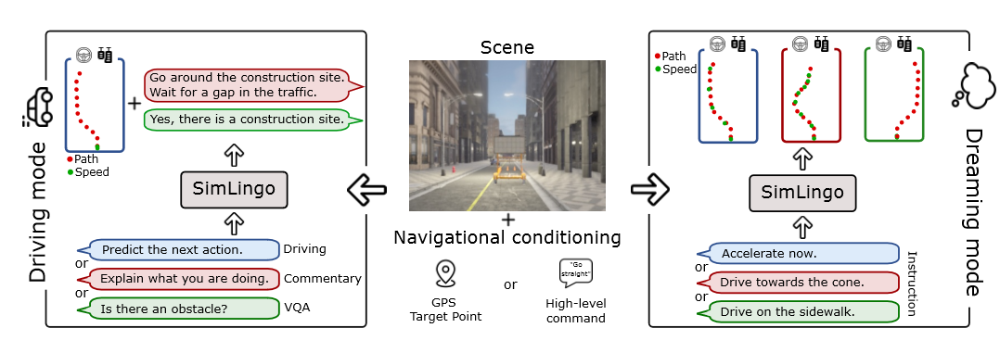
図1：概要：SimLingo は、自動運転、視覚言語理解、言語と行動の整合（language-action alignment）というタスクを統合した視覚・言語・行動（vision-language-action）モデルである。カメラ画像のみを用いて、公式の CARLA Leaderboard 2.0 と Bench2Drive で最先端（state of the art）の性能を達成している。言語と行動の整合を改善するため、指示追従の一形態である Action Dreaming というタスクを導入する。
図中ラベル：Driving mode＝運転モード、Dreaming mode＝ドリーミングモード、Scene＝シーン、Navigational conditioning＝ナビゲーション条件付け、GPS Target Point＝GPS 目標点、High-level command＝高レベルコマンド（"Go straight"＝直進せよ）、Path＝経路、Speed＝速度、Go around the construction site. Wait for a gap in the traffic.＝工事現場を迂回する。交通の切れ目を待つ。、Yes, there is a construction site.＝はい、工事現場がある。、Predict the next action.＝次の行動を予測せよ。（Driving＝運転）、Explain what you are doing.＝何をしているか説明せよ。（Commentary＝コメンタリー）、Is there an obstacle?＝障害物はあるか？（VQA）、Accelerate now.＝今すぐ加速せよ。、Drive towards the cone.＝コーンに向かって走行せよ。、Drive on the sidewalk.＝歩道を走行せよ。、Instruction＝指示、or＝または
要旨
大規模言語モデル（LLM）を自動運転に統合することは、汎化性と説明可能性の向上が期待されることから大きな注目を集めている。しかし既存手法は、運転か視覚言語理解のどちらか一方に焦点を当てることが多く、高い運転性能と幅広い言語理解の両立は依然として困難である。加えて、視覚言語理解に取り組む主流のアプローチは視覚的質問応答（VQA）である。しかし自動運転においてこれが有用なのは、それが行動空間と整合している場合に限られる。そうでなければ、モデルの回答がその挙動と矛盾する可能性がある。そこで我々は、(1) 閉ループ運転、(2) 視覚言語理解、(3) 言語と行動の整合、という 3 つの異なるタスクを扱えるモデルを提案する。我々のモデル SimLingo は視覚言語モデル（VLM）に基づき、LiDAR のような高価なセンサを用いずカメラのみで動作する。SimLingo は、広く用いられている CARLA シミュレータ上の Bench2Drive ベンチマークで最先端の性能を達成し、CARLA challenge 2024 の優勝エントリーである。さらに、高い運転性能を維持しつつ、多様な言語関連タスクにおいても優れた結果を達成する。
脚注*：Wayve でのインターン期間中に行った研究。チャレンジの技術報告（予備版）：https://arxiv.org/abs/2406.10165
1 はじめに
近年、視覚言語モデル（VLM）［12, 36, 37, 58］は、世界に関する幅広い知識を持ち、未知のプロンプトにも汎化できる能力を示してきた。これらの能力を自動運転システムに組み込むことで、多様で稀なシナリオにおける頑健性を高め、より円滑な人間と機械の対話を可能にできる可能性がある。視覚駆動ロボティクスの分野では、事前学習済みの視覚言語モデル（VLM）を活用して性能を高める取り組みが始まっている。こうしたモデルは、不慣れな環境の理解と適応、および自然言語コマンドへの追従に優れているためである［7, 32, 69］。
エンドツーエンド自動運転においても、運転モデルへの VLM の導入が注目を集めている［3, 25, 53］。VLM は計画性能の向上［51, 66］や、運転シーンに特化した視覚的質問応答（VQA）という形での視覚言語能力の実現［44, 45］に用いられている。VQA は、モデルがシーンを理解し、物体が自らの挙動にとって持つ意味を理解しているかを検証する有望な方法である。しかし、この理解を言語空間のみで評価すると、実際の運転判断から完全に切り離されてしまう可能性がある（例えば、モデルは赤信号が見えると主張しているのに、行動は加速を示している）。我々は、整合した（aligned）言語インタラクション、すなわちモデルの行動が言語による手がかりに応じて適応するものだけが、真の言語理解の因果的な証拠を提供し得ると主張する。言語理解と運転行動を整合させるというこの課題に取り組むため、我々は Action Dreaming を提案する。これは、整合を改善するための新しいデータセットであると同時に、危険な指示を実際に実行することなく、言語入力が行動にどう影響するかを評価するためのベンチマークである。既存のエキスパートデータに対して事後的に指示と行動のペアを生成する場合、行動は視覚的な手がかりだけから推測できてしまう。そのためモデルは言語指示に注意を払う必要がない。これが言語と行動の不整合を生む。これに対処するため、我々は、ある状態に対して複数の起こり得る未来をシミュレーションする新しいデータ収集手法を提案する。同一の視覚的文脈に対する多様な指示・行動ペアの集合で学習とテストを行うことで、モデルが指示に耳を傾けることを保証する。
2 つ目の主要な焦点は運転性能である。VLM と運転を組み合わせた多くの研究は、過度に単純化された環境（例：HighwayEnv）［14, 15, 41, 61］や、開ループ設定（例：NuScenes の計画タスク）［25, 43, 53, 55］で性能を評価している。我々は、難易度の高い閉ループベンチマークでモデルを厳密に検証する。
貢献。(1) CARLA シミュレータにおける公式の CARLA Leaderboard 2.0 とローカルベンチマーク Bench2Drive で、最先端の運転性能を達成する VLM ベースの運転モデル。(2) 新しいタスク（Action Dreaming）。これには、指示・行動ペアを収集する方法論と、安全でない行動を実行することなく言語理解と行動の結び付きを評価するベンチマークが付随する。(3) 良好な運転性能を達成するだけでなく、複数の言語関連タスクも同一モデルに含む汎用（generalist）モデル。
2 関連研究
エンドツーエンド自動運転。模倣学習（IL）［8, 26, 49, 62］に基づくエンドツーエンド学習は、CARLA Leaderboard（LB）1.0［1］における最先端手法の主流のアプローチである。CARLA Leaderboard 2.0［2］の導入により、運転タスクは根本的に難しくなった。このことは、LB 1.0 の代表的手法の 1 つ（TransFuser）を新しい LB 2.0 にゼロショットで適用すると、ドライビングスコアが大幅に低下する（66.32 から 0.58）ことに示されている。最先端のエンドツーエンド手法の多くは補助出力を取り入れ、カメラと LiDAR の組み合わせのような複数のセンサに依存している［8, 13, 26, 49, 50］。しかし、カメラ優先のモデルを展開することへの関心が高まっている。これは業界のプレイヤー［3, 54］や、DriveCoT［59］や TCP［62］のような学術研究がカメラ画像のみを用いて競争力のある結果を示していることにも表れている。我々はこのアプローチに従い、LIDAR のような高価なセンサを用いない。
運転のための言語モデル。最先端の運転モデルの多くは、ドメイン固有のアーキテクチャを導入している［13, 24, 26］。しかし、大規模言語モデルと視覚言語モデルの近年の進歩に伴い、そうした汎用アーキテクチャが運転システムに統合されるようになった。LLM-Driver［10］、DriveGPT4［63］、DriveLM［53］のようなマルチモーダル LLM ベースの運転フレームワークは、異なるモダリティからの入力を持つ基盤モデルを運転に利用している。GPT-Driver［42］と LanguageMPC［48］は、テキストを用いて ChatGPT を動作計画器としてファインチューニングする。知識駆動型のアプローチ［15, 61］も、常識的知識に基づいて意思決定を行うために採用されている。しかし、これらの研究の大半は、主に NuScenes のような開ループ設定や HighwayEnv のような単純化された運転環境での定性的分析によって評価されている［14, 15, 41, 61］。FED［66］は、学習中に言語でフィードバックを与えることで、VLM を閉ループ運転に用いる。LMDrive［51］は、限られた人間の指示の集合に従うことができるエンドツーエンドの閉ループ運転モデルを提案している。しかし、一般的に用いられる運転ベンチマークで評価すると、最先端の運転モデルに大きく後れを取っている［34］。DriveMLM［60］も指示追従を含むが、我々の手法とは異なり既製の動作計画器を用いており、エンドツーエンドで学習されていない。
いくつかの研究は、視覚的質問応答（VQA）を通じて言語理解を自動運転システムに統合している。しかし多くのアプローチは、評価を開ループ設定に限定している［25, 39, 53］か、行動予測をまったく含んでいない［40, 44, 45］。これまでのところ、開ループのモデルは閉ループベンチマークで検証すると大きく後れを取っている［23, 31, 43］。開ループの結果が閉ループに転移するという証拠はなく、アブレーションや主張の信頼性を損なっている［27］。このことは、このギャップを埋めるには、学習、アーキテクチャ、制御、データ構成において大きな変更が必要であることを浮き彫りにしている。さらに、指示追従能力の体系的な評価、とりわけ指示と行動の整合に着目した評価が根本的に不足している。
3 手法
3.1 タスクの概要
運転（Driving）。運転の目的は、CARLA［18］自動運転シミュレータにおいて、あらかじめ定められた中間地点を通過しながら、与えられた地図上の指定された目標地点に到達することである。地図には高速道路、市街地の道路、住宅地、郊外の田園地帯といった多様な環境が含まれ、晴天の日中、夕暮れ、雨、霧、夜間といったさまざまな気象条件の下で、これらすべてを走行しなければならない。その途中で、エージェントは、信号や横断歩道を無視して横断する歩行者への遭遇、駐車場からの出庫、保護されていない右左折（unprotected turn）の実行、流れている交通への合流、工事現場の通過、ドアが開いた車両の回避など、多様で複雑なシナリオが高密度に発生する状況に対処しなければならない。
視覚言語理解（Vision-Language Understanding）。さらにモデルは、現在の判断と行動を自然言語で説明すること（コメンタリー、Commentary）や、シミュレーションされた運転シーンに関する質問に答えること（VQA）を含む、多様な言語タスクを解く必要がある。コメンタリーのタスクは「自車は次に何をすべきで、それはなぜか？」という問いに答えるものである。回答は、経路（例：車線変更、物体の回避）と速度に、その両方の理由を添えて言及する。さらに、最終モデルでは推論時にデフォルトでコメンタリーを実行する。これは、最終的な運転モデルが Chain-of-Thought の設定で動作することを意味する。すなわち、まず行動とその理由が言語空間で予測され、次に生成されたコメンタリーを条件として行動が予測される。
Action Dreaming。3 つ目のタスクは、視覚言語理解と、それを行動空間に整合させる能力とを組み合わせたものである。モデルには、速度の変更、車線変更、特定の物体に向かっての走行、その他のナビゲーション上の変更を含む、幅広い指示が課される。これには、通常の運転中に起こり得る一般的な指示だけでなく、現実世界では決して実行すべきでないが、モデルが多様な指示を理解しているかを示す分布外の指示（例：物体への衝突）も含まれる。これにより、モデルの言語能力が行動空間と整合しているかを検証する。これらの行動を実際に実行したくはないため、我々はこれを Action Dreaming モードと呼ぶ。モデルには言語による指示が与えられ、モデルは対応する行動を予測する必要がある。
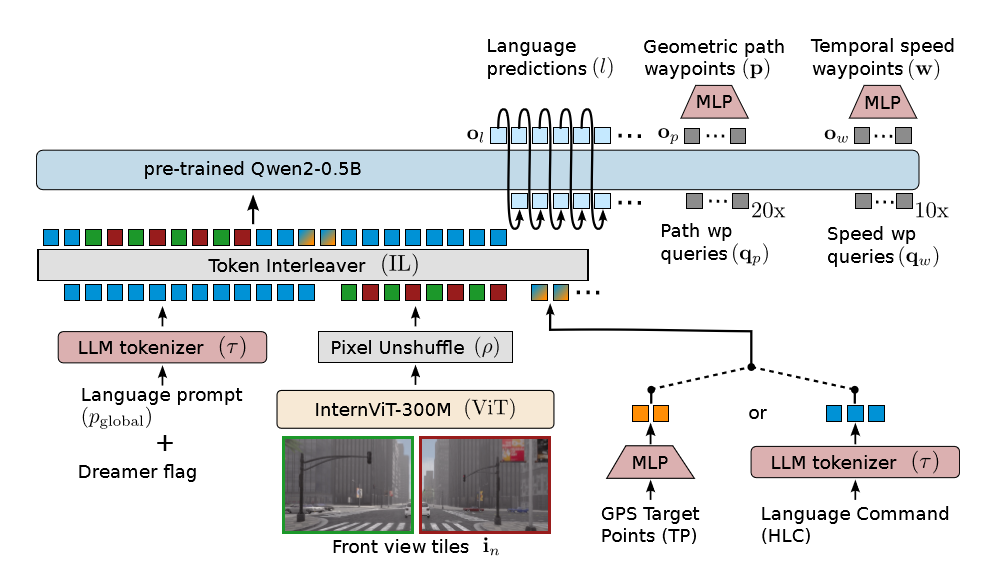
図2：SimLingo のアーキテクチャ。画像、ナビゲーション条件付け、言語プロンプトをエンコードする。高解像度画像をエンコードするために、画像をタイルに分割し、各タイルを独立にエンコードすることで、448x448 の解像度で事前学習された画像エンコーダを再利用する。すべての埋め込みは LLM によって処理され、この LLM を LoRA でファインチューニングして言語と行動を予測する。行動出力には、横方向制御を改善するため、時間的な速度ウェイポイントと幾何的な経路ウェイポイントの両方を持つ分離（disentangled）表現を用いる。
図中ラベル：Language predictions＝言語予測、Geometric path waypoints＝幾何的経路ウェイポイント、Temporal speed waypoints＝時間的速度ウェイポイント、pre-trained Qwen2-0.5B＝事前学習済み Qwen2-0.5B、Path wp queries＝経路ウェイポイントクエリ、Speed wp queries＝速度ウェイポイントクエリ、Token Interleaver＝トークンインターリーバ、LLM tokenizer＝LLM トークナイザ、Language prompt＝言語プロンプト、Dreamer flag＝Dreamer フラグ、Front view tiles＝前方視野タイル、GPS Target Points (TP)＝GPS 目標点（TP）、Language Command (HLC)＝言語コマンド（HLC）、or＝または
3.2 データセット
運転。CARLA シミュレータで運転データセットを収集するため、特権情報を用いるルールベースのエキスパート PDM-lite［6, 53］を利用する。データ収集には、シナリオを伴う 3 つのルート集合を用いる。(1) TransFuser［13］の Town 1–10 の学習用ルート。これを Leaderboard 2.0 に対応するよう変換した。(2) 自明なデータ（例：危険な事象のない直進走行）を減らし、データ管理を簡単にするため、［13, 35］で提案されたように、Town 12 と Town 13 の公式 CARLA LB 2.0 ルートを、単一のシナリオを中心とする短いセグメントに分割した。(3) LB 2.0 の導入により、ナビゲーション用の目標点間の最大距離は 50 メートルから 200 メートルに増加した。シナリオを 1 つだけ含むルートはこの距離内に収まることが多く、次の目標点が 200 メートル先ではなくルートの終点（すなわち 200m より近く）にあるため、分布シフトが生じる。そこで、1 ルートあたり 3 つのシナリオを含む、より長いルートの集合を用いる。シナリオの種類のバランスを確保するため、シナリオごとのルート数を調整し（すなわち、稀なシナリオを含むルートをアップサンプリングする）、ランダムな天候拡張を適用し、シナリオが生成される距離を ±10% 変化させる。全体として、4 fps で 310 万サンプルを収集する。
視覚言語理解。視覚言語理解のデータについては、DriveLM［53］のヒューリスティクスを適用して、我々の運転データセットに対する VQA ラベルを生成する。学習には Town 12 を、評価には Town 13 を用いる。コメンタリーのタスクについては、このタスクが DriveLM のラベルに含まれないため、新たにラベルを生成する。同様に、データ収集時の特権情報とルールベースのエキスパートのロジックを用いて説明文を生成する。より正確には、エキスパートの Intelligent Driver Model（IDM）［56］から得られる先行物体と、物体を避けるための経路変更に関する情報を用いる。さらに、自車のウェイポイントに基づくヒューリスティクスを用いて、停止状態からの発進や同じ速度での走行継続といった運転意図を区別する。
Action Dreaming。言語を行動空間に整合させるには、指示と行動が対になったデータが必要である。事後的に指示を生成する際にエキスパートが実際に実行した行動だけに頼ると、利用可能な視覚情報から完全に推測できるラベルとなってしまい、言語指示を処理する必要がなくなる。この制約に対処するため、同一の視覚的文脈に対して複数の代替的な指示と行動を生成し、モデルに指示へ耳を傾けることを強いる。元のデータセットについて、他車両の位置や速度など、シミュレータの状態の一部（網羅的ではない）を保存しておく。他のアクタについては「world-on-rails」仮定［9］（すなわち、他のすべての動的エージェントは固定された経路上にあるものとして扱われ、環境の変化に反応しない。元のシミュレーションを再生するのに近い）を利用し、自車のダイナミクスは運動学的自転車モデルで近似する。これにより、行動を実際に実行することなく、自車の異なる起こり得る将来軌道をシミュレーションし、他のエージェントとの衝突判定を行うことができる。このデータセットには、車線変更（歩道や駐車レーンへの移動を含む）、速度調整、衝突を引き起こす可能性のある特定の物体（例：トラフィックコーン、標識、車両）に向かっての走行、一時停止標識や停止線のような特定の路面標示の横断など、いくつかの種類の新しい軌道が含まれる。各代替的な指示・行動ペアについて、その行動が安全に実行できるかを示すフラグと、行動が実行可能かどうかを、実行できない場合はその理由とともに記述する言語ラベルも持つ。学習には Town 12 を、検証には Town 13 を用いる。データ収集とラベル付け手順の詳細は付録 A に記載している。
3.3 アーキテクチャ
SimLingo は InternVL-2 アーキテクチャ［20］を基盤とし、追加の入力モダリティと出力ヘッドを備える。図 2 に SimLingo のアーキテクチャの概要を示す。
入力表現。SimLingo は環境内を走行するためにカメラ画像を用いる。入力として、カメラ画像 \( \mathbf{I} \in \mathbb{R}^{H \times W} \)、次の 2 つの GPS 目標点 TP または高レベル言語コマンド HLC（例："turn left"＝左折せよ）のいずれかの形式のナビゲーション情報、そして自車の速度 \( v \) を与える。さらに、現在のタスクに関する情報を含むタスクプロンプトを入力する。我々は 4 種類のタスクプロンプト \( p_{\text{task}} \) を区別する。(1) 言語予測なしの運転：「Predict the waypoints.」(2) コメンタリー＋運転：「What should the ego do next?」(3) VQA＋運転：「Q: ⟨question⟩?」(4) Action Dreaming：「⟨Dreamer flag⟩⟨instruction⟩.」⟨Dreamer flag⟩ については 2 つのモードを区別する。有効化されている場合、モデルは指示に整合した行動を予測すべきであり、無効化されている場合、モデルは安全でない指示を拒否する必要がある。すべての入力情報はグローバル LLM プロンプト \( p_{\text{global}} \) の一部であり、次の構造を持つ：「⟨image features \( \mathbf{e}_I \)⟩\n Current speed: ⟨\( v \)⟩m/s. Command: ⟨nav. features \( \mathbf{e}_{nav} \)⟩. ⟨task prompt \( p_{\text{task}} \)⟩.」⟨⟩ 内の部分はすべて、対応する特徴埋め込みに置き換えられる。
出力表現。出力は行動と言語の 2 つのモダリティからなる。任意の言語予測 \( l \) には、標準的な自己回帰的トークン予測を用いる。行動表現には、(1) 時間的速度ウェイポイント \( \mathbf{w} \in \mathbb{R}^{N_w \times 2} \)（0.25 秒ごとに 1 点の座標をとる \( N_w \) 個の将来座標）を持つ分離表現を用いる。これは将来の特定の時刻における自車の位置を表す。また、(2) 幾何的経路ウェイポイント \( \mathbf{p} \in \mathbb{R}^{N_p \times 2} \)（1 メートルごとに 1 点の座標をとる \( N_p \) 個の将来座標）も予測する。これは、そこに到達するまでの時間とは無関係に、自車の将来の位置を表す。時間的ウェイポイント \( \mathbf{w} \) から目標速度を、幾何的ウェイポイント \( \mathbf{p} \) から目標角度を得る。次に、2 つの PID 制御器を用いて操舵角と加速度を得る。操舵と速度に時間的ウェイポイントのみを用いると、特に右左折時や障害物を避ける際に操舵の問題が生じることに気づいた。経路ウェイポイントを用いることで、車両が停止しているときにも経路を予測するため、より密な教師信号が得られ、操舵挙動が改善する。より効率的な行動予測を可能にするため、すべての行動埋め込みを自己回帰的にではなく 1 回の順伝播で予測する。このために、学習可能なクエリトークン \( \mathbf{q}_p \) と \( \mathbf{q}_w \) を入力する。出力特徴 \( [\mathbf{o}_p, \mathbf{o}_w] \) の上に置いた MLP がウェイポイントの差分を生成する。これらの差分の累積和により、最終的なウェイポイント \( \mathbf{p} \) と \( \mathbf{w} \) が得られる。
視覚・言語・行動モデル。SimLingo の主アーキテクチャとして、Mini-InternVL ファミリー［20］の InternVL2-1B を用いる。InternVL2 ファミリー［11, 12, 20］は最先端の性能に達しつつ、1B パラメータのモデルから始まる最も幅広いモデルサイズを提供している。InternVL2-1B モデルは、視覚エンコーダ InternViT-300M-448px（ViT）と、言語モデル（LLM）としての Qwen2-0.5B-Instruct［64］から構成される。
可変高解像度画像エンコーディング。高解像度画像の処理は、画像の詳細な理解に不可欠である。特に自動運転では、大きな交差点の信号機のような重要な情報が、わずか数ピクセルでしか見えない場合がある。ほとんどの VLM は CLIP で事前学習された視覚エンコーダに基づいており、これらは 336x336（一部は 448x448）の解像度で事前学習されている。動的かつより高い解像度を処理できるようにするため、入力画像 \( \mathbf{I} \in \mathbb{R}^{H \times W} \) を \( N_I \) 個の 448x448 ピクセルのタイル \( \mathbf{i}_n \in \mathbb{R}^{448 \times 448} \) に分割し、各タイルから独立に特徴を抽出する。この方法は最新の VLM で一般的に用いられている［12, 37］。LLM の二次の計算量に起因する計算オーバーヘッドを減らすため、InternVL2 はピクセルアンシャッフル（pixel unshuffle）手法［52］（\( \rho \)）を用いてトークン数を 4 分の 1 にダウンサンプリングする。こうして各 448 × 448 タイルは 256 個の視覚トークンで表現される。視覚特徴は次のように得られる。
\[ \mathbf{e}_I = \rho([\mathrm{ViT}(\mathbf{i}_n)]_{n=0}^{N_I}) \quad \in \mathbb{R}^{(N_I * 256) \times D} \]
ここで \( D \) は埋め込みサイズである。本研究では \( N_I = 2 \) を用い、512 個の視覚トークンとなる。
運転固有の入力。ナビゲーション情報は、GPS 位置の形式の目標点（TP）か、言語コマンド（HLC）のいずれかとして与えられる。目標点を用いる場合、位置を MLP でエンコードして 2 つのナビゲーション埋め込み \( \mathbf{e}_{nav} \in \mathbb{R}^{2 \times D} \) を得る。言語コマンドを用いる場合は、LLM の標準のトークナイザを用いて埋め込み \( \mathbf{e}_{nav} \in \mathbb{R}^{N_{\text{HLC}} \times D} \) を得る。ここで \( N_{\text{HLC}} \) はナビゲーションコマンドを表すトークン数である。学習中は 2 つの入力モダリティをランダムに切り替える。速度 \( v \) は、グローバル LLM プロンプトの一部として自然言語で用いる。
言語入力。すべての言語部分について、LLM の元のトークナイザを用いてトークン埋め込み \( \mathbf{e}_L \) を得る。
トークンインターリーバ。各入力モダリティをエンコードした後、トークンインターリーバ（IL）が \( p_{\text{global}} \) のプレースホルダトークン ⟨⟩ を対応する埋め込みに置き換え、入力埋め込み系列を得る。
\[ \mathbf{e}_{\text{LLM}} = \mathrm{IL}(\mathbf{e}_L, \mathbf{e}_I, \mathbf{e}_{nav}). \]
このインターリーブされたトークン系列が、事前学習済み LLM に入力される。
大規模言語モデル。入力埋め込みと行動クエリが与えられると、LLM は言語と行動の出力特徴を生成する。
\[ [\mathbf{o}_l, \mathbf{o}_p, \mathbf{o}_w] = \mathrm{LLM}([\mathbf{e}_{\text{LLM}}, \mathbf{q}_w, \mathbf{q}_p]) \quad . \]
まず、タスクプロンプトへの回答を表す言語予測を自己回帰的に生成する。次に、追加の 1 回の順伝播で、経路とウェイポイントからなる行動を生成する。経路とウェイポイントには smooth-L1 損失を、予測された言語トークンには交差エントロピー損失を用いる。
3.4 学習
データセットの混合。2 種類の行動ラベルを区別する。(1) エキスパートの軌道と、(2) ドリーム軌道（安全なものと安全でないもの）である。学習中は、それぞれから 50/50 でサンプリングする。エキスパートの軌道については、追加の言語教師信号として 3 つの選択肢のうち 1 つを用いる。(1) VQA、(2) コメンタリー、(3) 言語なし。50% で VQA の予測、35% でコメンタリーの予測をサンプリングし、7.5% ではコメンタリーをプロンプトに与え、7.5% では言語の教師信号を一切与えない。ドリーム軌道については、50% は Dreamer flag を有効化し、50% は無効化して学習する。無効化時には、モデルは指示が安全に実行できるかを判断し、安全でない指示を拒否する必要がある。
データバケット。運転の大部分は、直線的で何も起こらない区間である。興味深いシナリオの収集を最大化するため、多様な難しい状況を中心にデータ収集を行う。しかし、ある割合の簡単で何も起こらないデータは避けられない。この問題に対処するため、特定の興味深いサンプルを含むデータバケットを作成し、各バケットに確率を割り当てる。学習中は、データセット全体ではなくこれらのバケットからサンプリングする。この手法により、エポックあたりのサンプル数は 650,000 に減少する。バケットの種類の詳細は付録 B.2 にある。
4 実験
本節では、まず使用したベンチマークと評価指標の概要（4.1 節）と実装の詳細（4.2 節）を述べる。次に、結果（4.3 節）を定量的・定性的に示す。
4.1 ベンチマークと評価指標
評価指標の詳しい説明は付録 B.4 を参照されたい。
Leaderboard 2.0。異なる気象条件下の非公開ルートを用いる、CARLA シミュレータの公式テストサーバを使用する［2］。公式の CARLA 評価指標である Driving Score（DS）、Route Completion（RC）、Infraction Score（IS）を報告する。Driving Score は、違反によるスコアの非線形な減少のため、現在の性能水準にあるモデルではルートをより多く完走するほどペナルティを受けるような計算方法になっている。その欠点に関するより詳しい議論は付録 B.4 にある。
Bench2Drive。ローカル評価には、CARLA バージョン 0.9.15 に基づく Bench2Drive ベンチマーク［30］を用いる。これは Town01〜Town15 上の約 150m の 220 ルートと、さまざまな天候を用いる。公式の評価指標を用い、それにはドライビングスコア、成功率、効率性、快適性が含まれる。これらの短いルートでは高いドライビングスコアを得やすく、値の範囲は Leaderboard の数値とは比較できない。
DriveLM-hard（VQA）とコメンタリー。DriveLM［53］を用いて VQA データを生成し、3.2 節で述べたアノテーション手法を用いて、学習中には使わない検証用ラベルとして Town 13 の追加のコメンタリーラベルを収集する。DriveLM とは異なり、データ全体からランダムにサンプリングして稀な回答を大幅に過小サンプリングしてしまう代わりに、回答タイプごとに 10 例を一様にサンプリングした、より難しい検証セットを構築する。我々の VQA 検証セットは 330 種類の異なる回答タイプを含み、コメンタリーの検証セットは 190 種類を含む。評価指標には GPT と SPICE を用いる。
Action Dreaming。言語空間でシーン固有の知識を理解する能力だけでなく、それを行動空間に結び付ける能力も評価するため、Action Dreaming 評価を導入する。モデルは指示の形で言語入力を受け取り、対応する行動がどのようなものになるかを想像する必要がある。この検証には、我々の Dreamer データセット（3.2 節で説明）の Town 13 を用いる。指示は次のクラスのいずれかに属する：減速（Slow down）、加速（Speed up）、目標速度への到達（Reach Target Speed）、車線変更（Lane Change）、物体中心（Object centric）。評価は開ループで行い、評価指標として成功率（Success Rate）を用いる。各クラスについて、成功を定義する個別のルールを用いる。
4.2 実装の詳細
SimLingo。最適化には、重み減衰 0.1、学習率 3e-5 の AdamW オプティマイザ［38］を、リスタートなしのコサインアニーリングスケジュールとともに用いる。学習効率とメモリ使用量の最適化には DeepSpeed v2 を用いる。LLM 以外のすべての構成要素は完全にファインチューニングし、LLM には有効性が示されている［17］ようにすべての線形層に LoRA［22］を適用する。TF++［26］と同じデータ拡張手法を適用するが、シフトと回転の拡張をより強くする（シフト：1.5m、回転：20 度）。モデルは 8xA100 80GB GPU でバッチサイズ 12 により 14 エポック学習し、これには 24 時間を要する。追加のデータを加えた後、L2 損失では学習中に不安定性が生じたため、SmoothL1 損失に変更した。推論時には、デフォルトでコメンタリーを用いる。これは、最終的な運転モデルが Chain-of-Thought の設定で動作することを意味する。すなわち、まず行動と理由が言語空間で予測され、次に生成されたコメンタリーを条件として行動が予測される。
| 手法 | センサ | 補助ラベル | DS ↑ | RC ↑ | IS ↑ | |
|---|---|---|---|---|---|---|
| Map | CaRINA mod.［47］ | L,C,M | O | 1.14 | 3.65 | 0.46 |
| Kyber-E2E［19］ | L,C,R,M | I, O | 5.47 | 15.89 | 0.34 | |
| TF++［68］ | L,C | S, D, O, B | 5.56 | 11.82 | 0.47 | |
| SimLingo-BASE* | C | - | 6.25 | 18.89 | 0.36 | |
| Sensor | Zero-shot TF++［26］ | L,C | S, D, O, B | 0.58 | 8.53 | 0.38 |
| CaRINA hybrid［47］ | L,C | I, O | 1.23 | 9.56 | 0.31 | |
| TF++［68］ | L,C | S, D, O, B | 5.18 | 11.34 | 0.48 | |
| SimLingo-BASE* | C | - | 6.87 | 18.08 | 0.42 |
表1：Leaderboard 2.0 の結果。SimLingo-BASE は公式の Leaderboard 2.0 で最先端の性能を達成している。凡例：L：Lidar、C：カメラ、R：レーダー、M：地図、priv：特権情報、O：物体検出（3D 位置と姿勢）、I：インスタンスセグメンテーション、S：セマンティックセグメンテーション、D：深度、B：BEV セマンティクス。*一貫性を保つため、我々のモデルの名称を CarLLaVA から SimLingo-BASE に変更した。（訳注：Map＝地図トラック、Sensor＝センサトラック。凡例の「I」は原文では "Instant Segmentation" と表記されているが、Instance Segmentation の誤記と考えられる。）
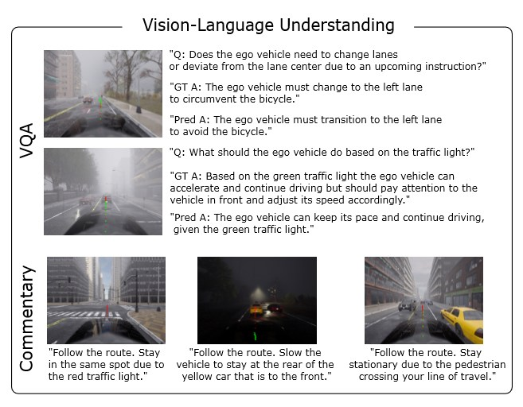
図3：VQA とコメンタリーの定性的結果。VQA については、2 つの例のシーンに対して、質問、正解の回答、予測された回答を示す。いずれの質問も、数ピクセルでしか見えない遠方の物体に言及しているが、モデルは正しい回答を生成している。
図中ラベル：Vision-Language Understanding＝視覚言語理解、Commentary＝コメンタリー。（上段）Q：自車は、この先の指示のために車線変更または車線中央から逸脱する必要があるか？／GT A（正解）：自車は自転車を迂回するために左車線へ変更しなければならない。／Pred A（予測）：自車は自転車を避けるために左車線へ移らなければならない。（中段）Q：信号機に基づいて自車は何をすべきか？／GT A：青信号に基づき、自車は加速して走行を続けてよいが、前方の車両に注意し、それに応じて速度を調整すべきである。／Pred A：青信号なので、自車はペースを保って走行を続けてよい。（下段のコメンタリー）「ルートに従う。赤信号のため同じ場所に停止し続ける。」「ルートに従う。前方の黄色い車の後ろにとどまるよう減速する。」「ルートに従う。進路を横断している歩行者のため停止を続ける。」
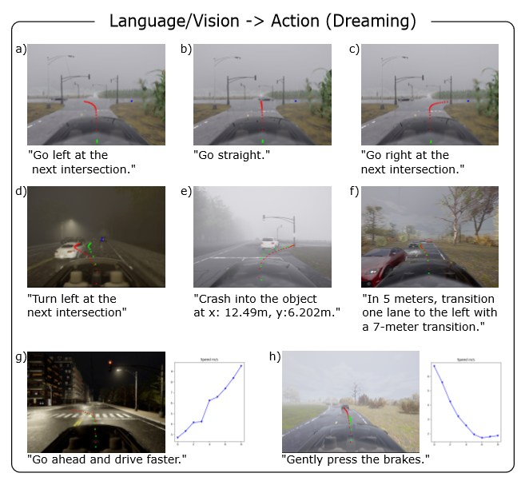
図4：Pose Dreaming の定性的結果。多様な状況と指示に対して予測された行動を示す。モデルは経路と速度に関する指示にうまく適応できている。凡例：赤：経路ウェイポイント、緑：速度ウェイポイント、青のグラフ：速度（m/s）。（訳注：キャプションの「Pose Dreaming」は本文の「Action Dreaming」を指すと考えられる。）
図中ラベル：Language/Vision -> Action (Dreaming)＝言語／視覚 → 行動（ドリーミング）。a)「次の交差点で左へ。」b)「直進。」c)「次の交差点で右へ。」d)「次の交差点で左折。」e)「x: 12.49m, y:6.202m の物体に衝突せよ。」f)「5 メートル先で、7 メートルの遷移区間で 1 車線左へ移れ。」g)「先へ進み、もっと速く走れ。」h)「ブレーキを優しく踏め。」（グラフ：Speed m/s＝速度 m/s）
ベースライン：SimLingo-BASE。運転固有の設計上の選択を検証したり、計算資源が限られた環境で公式の Leaderboard 2.0 上で評価したりするのにより適した、軽量なベースライン運転モデルを提供する。SimLingo との違いの詳細な一覧は付録 B.3 にあるが、主な違いは、言語をサポートせず、ゼロから学習される LLaMA アーキテクチャに基づくより小さな Transformer（50M パラメータ）を用いる点である。
Leaderboard が 2024 年 6 月に一時的に閉鎖されたため、最終版の SimLingo を Leaderboard に投稿することはできず（SimLingo-BASE は閉鎖前に投稿した）、ローカルベンチマーク（Bench2Drive）で閉ループ性能を比較することにした。Leaderboard 用のモデルでは、評価指標の節で述べた DS の性質に対抗するため、推論時に早期停止を適用する。走行距離を記録し、交差点の途中で停止するのを防ぐため、操舵角がゼロに近いときに、指定した距離を超えたら走行を停止する。
ベースライン：TCP-traj w/o distillation。Bench2Drive［30］ベンチマーク上の既存手法はすべて、Think2Drive［35］エキスパートが収集したデータセットで学習されている。我々はオープンソースのエキスパート PDM-lite［53］を用いるため、評価の公平性を高めるべく、PDM-lite で収集した我々のデータセット構成で TCP-traj w/o distillation を再学習する。最高速度や加速度といった運転挙動がエキスパート間で異なるため、閉ループで評価する際にはそれらの変化を考慮するよう制御器も調整する。TCP-traj w/o distillation を選んだのは、それがエキスパートの特徴蒸留に依存しない従来手法の中で最良のものだからである。エキスパートの特徴は PDM-lite や現実世界では利用できない。
| 手法 | エキスパート | DS ↑ | 成功率（%）↑ | 効率性 ↑ | 快適性 ↑ | |
|---|---|---|---|---|---|---|
| w/ dist. | TCP［62］ | Think2Drive | 40.70 | 15.00 | 54.26 | 47.80 |
| TCP-ctrl | Think2Drive | 30.47 | 7.27 | 55.97 | 51.51 | |
| TCP-traj | Think2Drive | 59.90 | 30.00 | 76.54 | 18.08 | |
| ThinkTwice［29］ | Think2Drive | 62.44 | 31.23 | 69.33 | 16.22 | |
| DriveAdapter［28］ | Think2Drive | 64.22 | 33.08 | 70.22 | 16.01 | |
| w/o dist. | AD-MLP［65］ | Think2Drive | 18.05 | 0.00 | 48.45 | 22.63 |
| UniAD-Tiny［24］ | Think2Drive | 40.73 | 13.18 | 123.92 | 47.04 | |
| UniAD-Base［24］ | Think2Drive | 45.81 | 16.36 | 129.21 | 43.58 | |
| VAD［31］ | Think2Drive | 42.35 | 15.00 | 157.94 | 46.01 | |
| TCP-traj w/o distillation | Think2Drive | 49.30 | 20.45 | 78.78 | 22.96 | |
| our dataset composition（我々のデータセット構成） | PDM-lite | 45.65 | 18.57 | 74.84 | 51.58 | |
| + with tuned controller（＋調整済み制御器） | PDM-lite | 63.45 | 37.79 | 228.46 | 30.76 | |
| SimLingo-BASE (LB2.0 model) | PDM-lite | 85.94 | 66.82 | 244.18 | 25.49 | |
| SimLingo | PDM-lite | 85.07±0.95 | 67.27±2.11 | 259.23±5.59 | 33.67±5.72 |
表2：Bench2Drive における閉ループの結果。我々の 2 つのモデル、SimLingo-BASE と完全版モデル SimLingo はいずれも、従来の最先端を大きな差で上回る。SimLingo が、複数の言語関連能力を含みながら、純粋な運転モデルである SimLingo-BASE と同等の運転性能を維持できる点を強調しておく。（訳注：w/ dist.＝エキスパート特徴の蒸留あり、w/o dist.＝蒸留なし。）
| モデル | DriveLM-VQA | コメンタリー | ||
|---|---|---|---|---|
| GPT ↑ | SPICE ↑ | GPT ↑ | SPICE ↑ | |
| InternVL2-1B | 33.08 | 30.55 | 14.95 | 7.60 |
| InternVL2-2B | 31.22 | 44.40 | 20.53 | 9.04 |
| InternVL2-4B | 27.11 | 43.51 | 24.75 | 8.12 |
| SimLingo-1B | 58.48 | 56.77 | 78.94 | 38.04 |
表3：言語能力。バランスの取れた評価分割における、DriveLM と我々のコメンタリーベンチマークでの結果を示す。SimLingo は、ゼロショットで評価した InternVL2 モデルを上回る。
4.3 結果
CARLA Leaderboard 2.0 における運転性能。公式の Leaderboard の結果を表 1 に示す。軽量モデル SimLingo-BASE により、Sensor トラックにおいて従来の最先端（CaRINA hybrid［47］）を 4.6 倍、最良の同時期の研究（TF++［68］）を 33% 上回る。アブレーション研究：我々の出力表現の影響を示すため、分離された経路＋速度ウェイポイントを、一般的に用いられる結合（entangled）されたウェイポイント表現と比較する。ドライビングスコアが 39.9 パーセント向上し、静的物体との衝突がゼロに減少することを確認した。さらに視覚エンコーダを分析し、CLIP 事前学習なしの ViT、および ImageNet［16］で事前学習した ResNet-34［21］と比較する（同じ学習予算を使用）。ゼロから学習した ViT は 0.45 DS しか得られず、CLIP 事前学習［46］の当然ともいえる能力を示している。ResNet は、我々の 6.87 に対して 2.71 のドライビングスコアとなる。また注目すべきこととして、我々の知る限り、我々のモデルは Leaderboard 上でカメラ画像のみで動作する唯一のモデルである（注：手法の報告がない Leaderboard のエントリーは含めていない）。出力表現、早期停止、Leaderboard の分散に関するアブレーションの詳細は付録 C に示す。
Bench2Drive における運転性能。表 2 に、ローカルベンチマーク Bench2Drive［30］での結果を示す（数値は Bench2Drive の GitHub リポジトリの最新版から引用）。このベンチマーク上の既存研究は、Think2Drive エキスパート［35］で収集したデータで学習している。しかしこのエキスパートはオープンソースではないため、言語アノテーションを得るのに必要なデータを収集できない。このため、ラベル作成のために保存するラベルを変更できるオープンソースのエキスパートである PDM-lite を用いる。公平な比較を提供し、異なるデータセットに由来する性能向上を切り分けるため、我々のデータセット構成と、我々のデータセット向けに調整した制御器を用いた TCP-traj w/o distillation の結果を示す。これら 2 つの変更により、性能は 49.30 DS から 63.45 DS に向上する。これは、データセットが性能向上に寄与しているものの、最先端の性能を得るには我々の追加の改良が不可欠であることを示している。運転の評価指標（DS と SR）を見ると、SimLingo と、Leaderboard に用いたものと同一のモデルである SimLingo-BASE は、従来のすべての手法を大きな差で上回っている。すべての SimLingo モデルについて、学習のばらつきを平均化するため 3 つのシードで学習する。快適性の指標においてのみ従来研究が一部で上回っているが、これはおそらく我々の手法の走行速度が高いためである。視覚・言語・行動モデル（SimLingo）は、幅広い言語能力を含みながら、純粋な運転モデル（SimLingo-BASE）の運転性能を維持できる。
言語理解：VQA とコメンタリー。DriveLM-hard とコメンタリーベンチマークでの結果を表 3 に示す。ベースラインとの比較として Mini-InternVL2 モデルを用いる。ただし、SimLingo はシミュレーションによる視覚的に分布内のデータで学習されているのに対し、InternVL2 はゼロショットでテストされている点を強調しておく。ベースラインモデルは、信号機や一時停止標識の識別のような基本的な質問には正しく答えるが、より複雑で運転に固有の質問には苦戦する。さらに、DriveLM のみでファインチューニングしたバージョン（InternVL2-1B-DriveLM）とも比較する。この特化モデルは 63.85 の GPT スコアを得るが、これは複数の異なるタスクを実行できる我々のモデルよりわずかに良いだけである。定性的な例を図 3 と付録 D に示す。モデルは特に学習中にまれにしか見ない回答タイプに苦戦することがわかった。これは、そうした回答タイプを含む運転サンプルをより多く収集するか、学習中にオーバーサンプリングすることで、性能をさらに改善できる可能性を示唆している。
| DS ↑ | SR（%）↑ | |
|---|---|---|
| GPS 目標点（TP） | 85.07±0.95 | 67.27±2.11 |
| 言語コマンド（HLC） | 86.08±1.76 | 65.78±3.90 |
表4：ナビゲーションコマンドへの追従。SimLingo は、ナビゲーション条件付け（GPS 目標点か言語コマンドか）に依存せず高い運転結果を得ており、指示に従う能力を示している。
| 評価指標 | SR（%）↑ | |||||
|---|---|---|---|---|---|---|
| カテゴリ | Faster（加速） | Slower（減速） | Target Speed（目標速度） | Lane Change（車線変更） | Objects（物体） | Avg.（平均） |
| w/o Dreamdata | 56.45 | 22.58 | 19.35 | 3.23 | 20.97 | 24.52 |
| SimLingo | 92.45 | 84.91 | 86.79 | 83.02 | 58.49 | 81.13 |
表5：Action Dreaming。ドリーミングフラグを有効にすると、SimLingo は、CARLA シミュレータがネイティブにサポートするコマンドのみで学習したモデルと比べて、幅広い指示に従うことができる。
| Comm | VQA | Dream | Bench2Drive | ||
|---|---|---|---|---|---|
| DS ↑ | SR（%）↑ | ||||
| SimLingo | ✓ | ✓ | ✓ | 85.07±0.95 | 67.27±2.11 |
| ✓ | ✓ | - | 84.41±1.38 | 64.85±2.24 | |
| ✓ | - | - | 84.55±0.42 | 65.00±0.64 | |
| - | - | - | 84.67±1.52 | 64.70±3.22 | |
表6：異なる学習データ混合に対する Bench2Drive での閉ループの結果。純粋な視覚言語タスク（コメンタリーと VQA）は、純粋な運転性能に影響しない（最終行）。しかし Action Dreaming の学習を含めると、運転がわずかに改善する。（訳注：Comm＝コメンタリー、Dream＝Action Dreaming。）
ナビゲーションコマンドへの追従。基本的なナビゲーションコマンドに従うモデルの能力を示すため、GPS 目標点によるナビゲーション条件付けを用いた SimLingo と、言語コマンド（HLC）（すなわち turn right＝右折せよ、のような言語指示）を用いた同じモデルとを比較する。表 4 は、HLC のみを用いても、TP を用いた場合の結果の分散の範囲内に収まる運転性能に到達することを示している。これにより、より人間らしい条件付けが可能になるだけでなく、目標点の位置を通じた復帰（recovery）という近道［26］が、我々の設定では不要であることも示唆される。
Action Dreaming。言語理解を行動空間に整合させる全般的な能力について、Action Dreaming データセットで評価する。表 5 に、Action Dreaming 評価のカテゴリごとの成功率を示す。Dreaming データで学習したモデルを、CARLA シミュレータが提供する指示のみで学習したベースラインと比較する。合成的に生成した指示・行動ペアで学習することで、大幅な改善が見られる（28.22 から 72.96 SR）。（訳注：表 5 の平均（Avg.）は 24.52 から 81.13 であり、本文の数値と一致しない。）図 4 に Pose Dreaming モードの定性的な例を示す。1 行目（a–c）では、同じシーンに対するナビゲーションの変更を示す。これは、モデルが視覚的手がかりに過剰適合せず、言語に注意を払っていることを示している。a) と d) では、左折という同じ指示を異なる文脈で用いており、モデルが状況に応じて応答をうまく適応できることを示している。シーン a) では交差点の直前にいるため、モデルは赤い経路ウェイポイントで示されるように左折を正しく予測する。対照的に、シーン d) では交差点から離れた多車線道路上にいるため、左折するとは、右左折に備えて左車線に移り、交差点が現れたときに曲がることを意味する。失敗例を含むさらなる例は付録 D にある。
学習データの混合。完全版 SimLingo モデルから、追加した言語タスクを 1 つずつ取り除き、言語能力を持たない基本運転モデルまでアブレーションを行う。表 6 は、純粋な運転モデル（4 行目）が、（整合していない）言語理解を持つモデル（2 行目と 3 行目）と同程度の性能を得ることを示している。したがって我々の実験では、整合していない言語タスクが運転に正または負の影響を与えることは確認されなかった。しかし、Action Dreaming データを学習データの混合に加えると、Bench2Drive ベンチマークでの運転性能がわずかに改善する。
5 結論と限界
我々は SimLingo を提示した。これは、言語理解能力を示しつつ、公式の CARLA Leaderboard 2.0 と Bench2Drive で最先端の結果を達成する VLM ベースの自動運転モデルである。運転のコメンタリーと VQA で言語性能を測定し、ファインチューニング後には汎用のベース VLM（InternVL2）が特化した運転ドメインで優れた性能を発揮できることを示した。この視覚言語理解を行動空間に整合させるため、Action Dreaming というタスクを導入し、多様な言語指示に対してモデルが高い成功率で行動を予測できることを実証した。
限界。我々の研究にはいくつかの限界がある。技術的・組織的な理由（2024 年 6 月の Leaderboard の閉鎖）により、公式の CARLA Leaderboard 2.0 では SimLingo-BASE しかテストできず、完全版の SimLingo モデルはテストできなかった。これは今後の課題とする。ただし、ローカルの Bench2Drive ベンチマークで SimLingo と SimLingo-BASE の閉ループ運転性能を厳密に検証した。また、Chain-of-Thought（CoT）（すなわち、中間的なコメンタリーを運転行動の条件とすること）を用いているものの、統計的に有意な運転性能の改善はまだ観測されていない（付録 C.3）。その利点を引き出すには、CoT に特化した適切なデータと学習レシピが必要であると我々は考えている。最後に、運転と言語理解はシミュレーション内でのみ行っている。実世界の運転モデルに VLM を加えると推論レイテンシが増加することは承知しているが、より小さな VLM の進歩と工学的な取り組み（［3, 4］など）により、車上で VLM をリアルタイムにテストすることが可能になると考えている。
謝辞。有益な議論と校正について、Wayve Lingo チーム全体、Ana-Maria Marcu、Jan Hünermann、Benoit Hanotte、Alice Karnsund、Jamie Shotton に感謝する。また、貴重な議論とエキスパートに関する支援について、Kashyap Chitta、Julian Zimmerlin、Jens Beißwenger、Bernhard Jäger、Andreas Geiger に感謝する。K. Renz を支援していただいた International Max Planck Research School for Intelligent Systems（IMPRS-IS）に感謝する。
参考文献
参考文献は原文のまま掲載した（原文の各項目末尾にある引用箇所のページ番号は省略した）。
- Carla autonomous driving leaderboard. https://leaderboard.carla.org/#leaderboard-10, 2020.
- Carla autonomous driving leaderboard 2.0. https://leaderboard.carla.org/, 2023.
- Lingo-2: Driving with natural language. https://wayve.ai/thinking/lingo-2-driving-with-language/, 2024.
- Lambda: The nuro driver's real time. https://medium.com/nuro/lambda-the-nuro-drivers-real-time-language-reasoning-model-7c3567b2d7b4, 2024.
- Peter Anderson, Basura Fernando, Mark Johnson, and Stephen Gould. Spice: Semantic propositional image caption evaluation. In ECCV, 2016.
- Jens Beißwenger. Pdm-lite: A rule-based planner for carla leaderboard 2.0. Technical report, University of Tübingen, 2024.
- Kevin Black, Noah Brown, Danny Driess, Adnan Esmail, Michael Equi, Chelsea Finn, Niccolo Fusai, Lachy Groom, Karol Hausman, Brian Ichter, Szymon Jakubczak, Tim Jones, Liyiming Ke, Sergey Levine, Adrian Li-Bell, Mohith Mothukuri, Suraj Nair, Karl Pertsch, Lucy Xiaoyang Shi, James Tanner, Quan Vuong, Anna Walling, Haohuan Wang, and Ury Zhilinsky. \( \pi_0 \): A vision-language-action flow model for general robot control. arXiv preprint arXiv:2410.24164, 2024.
- Dian Chen and Philipp Krähenbühl. Learning from all vehicles. In CVPR, 2022.
- Dian Chen, Vladlen Koltun, and Philipp Krähenbühl. Learning to drive from a world on rails. In ICCV, 2021.
- Long Chen, Oleg Sinavski, Jan Hünermann, Alice Karnsund, Andrew James Willmott, Danny Birch, Daniel Maund, and Jamie Shotton. Driving with LLMs: fusing object-level vector modality for explainable autonomous driving. In ICRA, 2023.
- Zhe Chen, Weiyun Wang, Hao Tian, Shenglong Ye, Zhangwei Gao, Erfei Cui, Wenwen Tong, Kongzhi Hu, Jiapeng Luo, Zheng Ma, et al. How far are we to gpt-4v? closing the gap to commercial multimodal models with open-source suites. Science China Information Sciences, 2024.
- Zhe Chen, Jiannan Wu, Wenhai Wang, Weijie Su, Guo Chen, Sen Xing, Muyan Zhong, Qinglong Zhang, Xizhou Zhu, Lewei Lu, Bin Li, Ping Luo, Tong Lu, Yu Qiao, and Jifeng Dai. Internvl: Scaling up vision foundation models and aligning for generic visual-linguistic tasks. In CVPR, 2024.
- Kashyap Chitta, Aditya Prakash, Bernhard Jaeger, Zehao Yu, Katrin Renz, and Andreas Geiger. Transfuser: Imitation with transformer-based sensor fusion for autonomous driving. IEEE T-PAMI, 2023.
- Can Cui, Yunsheng Ma, Xu Cao, Wenqian Ye, and Ziran Wang. Receive, reason, and react: Drive as you say with large language models in autonomous vehicles. ITS Magazine, 2024.
- Fu Daocheng, Li Xin, Wen Licheng, Dou Min, Cai Pinlong, Shi Botian, and Qiao Yu. Drive like a human: Rethinking autonomous driving with large language models. In WACV Workshops, 2024.
- Jia Deng, Wei Dong, Richard Socher, Li jia Li, Kai Li, and Li Fei-fei. Imagenet: A large-scale hierarchical image database. In CVPR, 2009.
- Tim Dettmers, Artidoro Pagnoni, Ari Holtzman, and Luke Zettlemoyer. Qlora: Efficient finetuning of quantized llms. 2023.
- Alexey Dosovitskiy, German Ros, Felipe Codevilla, Antonio Lopez, and Vladlen Koltun. Carla: An open urban driving simulator, 2017.
- Mohammed Elmahgiubi, Fazel Arasteh, Wang Zhitao, Yang Zhou, Yuanxin Zhong, Hamidreza Mirkhani, Weize Zhang, Zhan Qu, Zizhao Huang, and Kasra Rezaee. Kyber-e2e submission to cvpr's carla autonomous driving challenge.
- Zhangwei Gao, Zhe Chen, Erfei Cui, Yiming Ren, Weiyun Wang, Jinguo Zhu, Hao Tian, Shenglong Ye, Junjun He, Xizhou Zhu, et al. Mini-internvl: a flexible-transfer pocket multi-modal model with 5% parameters and 90% performance. Visual Intelligence, 2024.
- Kaiming He, Xiangyu Zhang, Shaoqing Ren, and Jian Sun. Deep residual learning for image recognition. In CVPR, 2016.
- Edward J. Hu, Yelong Shen, Phillip Wallis, Zeyuan Allen-Zhu, Yuanzhi Li, Shean Wang, Lu Wang, and Weizhu Chen. LoRA: Low-rank adaptation of large language models. In CoRL, 2021.
- Shengchao Hu, Li Chen, Penghao Wu, Hongyang Li, Junchi Yan, and Dacheng Tao. St-p3: End-to-end vision-based autonomous driving via spatial-temporal feature learning. In ECCV, 2022.
- Yihan Hu, Jiazhi Yang, Li Chen, Keyu Li, Chonghao Sima, Xizhou Zhu, Siqi Chai, Senyao Du, Tianwei Lin, et al. Planning-oriented autonomous driving. In CVPR, 2023.
- Jyh-Jing Hwang, Runsheng Xu, Hubert Lin, Wei-Chih Hung, Jingwei Ji, Kristy Choi, Di Huang, Tong He, Paul Covington, Benjamin Sapp, Yin Zhou, James Guo, Dragomir Anguelov, and Mingxing Tan. Emma: End-to-end multimodal model for autonomous driving. arXiv preprint arXiv:2410.23262, 2024.
- Bernhard Jaeger, Kashyap Chitta, and Andreas Geiger. Hidden biases of end-to-end driving models. In ICCV, 2023.
- Bernhard Jaeger, Kashyap Chitta, Daniel Dauner, Katrin Renz, and Andreas Geiger. Common Mistakes in Benchmarking Autonomous Driving. https://github.com/autonomousvision/carla_garage/blob/leaderboard_2/docs/common_mistakes_in_benchmarking_ad.md, 2024.
- Xiaosong Jia, Yulu Gao, Li Chen, Junchi Yan, Patrick Langechuan Liu, and Hongyang Li. DriveAdapter: breaking the coupling barrier of perception and planning in end-to-end autonomous driving. In ICCV, 2023.
- Xiaosong Jia, Penghao Wu, Li Chen, Jiangwei Xie, Conghui He, Junchi Yan, and Hongyang Li. Think twice before driving: Towards scalable decoders for end-to-end autonomous driving. In CVPR, 2023.
- Xiaosong Jia, Zhenjie Yang, Qifeng Li, Zhiyuan Zhang, and Junchi Yan. Bench2drive: Towards multi-ability benchmarking of closed-loop end-to-end autonomous driving. In NeurIPS Datasets and Benchmarks, 2024.
- Bo Jiang, Shaoyu Chen, Qing Xu, Bencheng Liao, Jiajie Chen, Helong Zhou, Qian Zhang, Wenyu Liu, Chang Huang, and Xinggang Wang. Vad: Vectorized scene representation for efficient autonomous driving. In ICCV, 2023.
- Moo Jin Kim, Karl Pertsch, Siddharth Karamcheti, Ted Xiao, Ashwin Balakrishna, Suraj Nair, Rafael Rafailov, Ethan Foster, Grace Lam, Pannag Sanketi, Quan Vuong, Thomas Kollar, Benjamin Burchfiel, Russ Tedrake, Dorsa Sadigh, Sergey Levine, Percy Liang, and Chelsea Finn. Openvla: An open-source vision-language-action model. In CoRL, 2024.
- Alon Lavie and Abhaya Agarwal. METEOR: An automatic metric for MT evaluation with high levels of correlation with human judgments. In ACL Workshop, 2007.
- Changwen Li, Joseph Sifakis, Rongjie Yan, and Jian Zhang. A comprehensive evaluation of four end-to-end ai autopilots using cctest and the carla leaderboard. arXiv preprint arXiv:2501.12090, 2025.
- Qifeng Li, Xiaosong Jia, Shaobo Wang, and Junchi Yan. Think2drive: Efficient reinforcement learning by thinking in latent world model for quasi-realistic autonomous driving (in carla-v2). In ECCV, 2024.
- Haotian Liu, Chunyuan Li, Qingyang Wu, and Yong Jae Lee. Visual instruction tuning. In NeurIPS, 2023.
- Haotian Liu, Chunyuan Li, Yuheng Li, Bo Li, Yuanhan Zhang, Sheng Shen, and Yong Jae Lee. Llava-next: Improved reasoning, ocr, and world knowledge, 2024.
- Ilya Loshchilov and Frank Hutter. Decoupled weight decay regularization. In ICLR, 2019.
- Yuhang Lu, Yichen Yao, Jiadong Tu, Jiangnan Shao, Yuexin Ma, and Xinge Zhu. Can LVLMs obtain a drivers license? a benchmark towards reliable AGI for autonomous driving. arXiv, 2409.02914, 2024.
- Yunsheng Ma, Amr Abdelraouf, Rohit Gupta, Ziran Wang, and Kyungtae Han. Video token sparsification for efficient multimodal LLMs in autonomous driving. arXiv, 2409.11182, 2024.
- Yunsheng Ma, Can Cui, Xu Cao, Wenqian Ye, Peiran Liu, Juanwu Lu, Amr Abdelraouf, Rohit Gupta, Kyungtae Han, Aniket Bera, James M. Rehg, and Ziran Wang. LaMPilot: an open benchmark dataset for autonomous driving with language model programs. In CVPR, 2024.
- Jiageng Mao, Yuxi Qian, Hang Zhao, and Yue Wang. GPT-Driver: Learning to drive with gpt. In NIPS Workshops, 2023.
- Jiageng Mao, Junjie Ye, Yuxi Qian, Marco Pavone, and Yue Wang. A language agent for autonomous driving. In COLM, 2024.
- Ana-Maria Marcu, Long Chen, Jan Hünermann, Alice Karnsund, Benoit Hanotte, Prajwal Chidananda, Saurabh Nair, Vijay Badrinarayanan, Alex Kendall, Jamie Shotton, Elahe Arani, and Oleg Sinavski. LingoQA: video question answering for autonomous driving. In ECCV, 2024.
- Tianwen Qian, Jingjing Chen, Linhai Zhuo, Yang Jiao, and Yu-Gang Jiang. NuScenes-QA: A multi-modal visual question answering benchmark for autonomous driving scenario. In AAAI, 2024.
- Alec Radford, Jong Wook Kim, Chris Hallacy, Aditya Ramesh, Gabriel Goh, Sandhini Agarwal, Girish Sastry, Amanda Askell, Pamela Mishkin, Jack Clark, et al. Learning transferable visual models from natural language supervision. arXiv.org, 2103.00020, 2021.
- Luis Alberto Rosero, Iago Pachˆeco Gomes, Ana Huaman Reyna, Victor Hugo Sillerico Justo, Vinicius Gustierrez Neves, Denis Fernando Wolf, and Fernando Santos Os orio. A hybrid autonomous driving navigation architecture for the 2024 carla autonomous driving challenge.
- Hao Sha, Yao Mu, Yuxuan Jiang, Li Chen, Chenfeng Xu, Ping Luo, Shengbo Eben Li, Masayoshi Tomizuka, Wei Zhan, and Mingyu Ding. LanguageMPC: Large language models as decision makers for autonomous driving. arXiv preprint arXiv:2310.03026, 2023.
- Hao Shao, Letian Wang, RuoBing Chen, Hongsheng Li, and Yu Liu. Safety-enhanced autonomous driving using interpretable sensor fusion transformer. In CoRL, 2022.
- Hao Shao, Letian Wang, Ruobing Chen, Steven L. Waslander, Hongsheng Li, and Yu Liu. Reasonnet: End-to-end driving with temporal and global reasoning. In CVPR, 2023.
- Hao Shao, Yuxuan Hu, Letian Wang, Steven L. Waslander, Yu Liu, and Hongsheng Li. Lmdrive: Closed-loop end-to-end driving with large language models. In CVPR, 2024.
- Wenzhe Shi, Jose Caballero, Ferenc Huszar, Johannes Totz, Andrew P. Aitken, Rob Bishop, Daniel Rueckert, and Zehan Wang. Real-time single image and video super-resolution using an efficient sub-pixel convolutional neural network. In CVPR, 2016.
- Chonghao Sima, Katrin Renz, Kashyap Chitta, Li Chen, Zhang Hanxue, Chengen Xie, Jens Beißwenger, Ping Luo, Andreas Geiger, and Hongyang Li. DriveLM: driving with graph visual question answering. In ECCV, 2024.
- Tesla. Tesla autopilot. https://www.tesla.com/autopilot, 2014. Online: accessed 18-October-2019.
- Xiaoyu Tian, Junru Gu, Bailin Li, Yicheng Liu, Yang Wang, Zhiyong Zhao, Kun Zhan, Peng Jia, Xianpeng Lang, and Hang Zhao. DriveVLM: the convergence of autonomous driving and large vision-language models. In CoRL, 2024.
- Martin Treiber, Ansgar Hennecke, and Dirk Helbing. Congested traffic states in empirical observations and microscopic simulations. Physical Review E, 62(2):1805–1824, 2000.
- Ramakrishna Vedantam, C Lawrence Zitnick, and Devi Parikh. Cider: Consensus-based image description evaluation. In CVPR, 2015.
- Peng Wang, Shuai Bai, Sinan Tan, Shijie Wang, Zhihao Fan, Jinze Bai, Keqin Chen, Xuejing Liu, Jialin Wang, Wenbin Ge, Yang Fan, Kai Dang, Mengfei Du, Xuancheng Ren, Rui Men, Dayiheng Liu, Chang Zhou, Jingren Zhou, and Junyang Lin. Qwen2-vl: Enhancing vision-language model's perception of the world at any resolution. arXiv preprint arXiv:2409.12191, 2024.
- Tianqi Wang, Enze Xie, Ruihang Chu, Zhenguo Li, and Ping Luo. DriveCoT: integrating chain-of-thought reasoning with end-to-end driving. arXiv, 2403.16996, 2024.
- Wenhai Wang, Jiangwei Xie, ChuanYang Hu, Haoming Zou, Jianan Fan, Wenwen Tong, Yang Wen, Silei Wu, Hanming Deng, Zhiqi Li, Hao Tian, Lewei Lu, Xizhou Zhu, Xiaogang Wang, Yu Qiao, and Jifeng Dai. DriveMLM: aligning multi-modal large language models with behavioral planning states for autonomous driving. arXiv, 2312.09245, 2023.
- Licheng Wen, Daocheng Fu, Xin Li, Xinyu Cai, Tao MA, Pinlong Cai, Min Dou, Botian Shi, Liang He, and Yu Qiao. DiLu: a knowledge-driven approach to autonomous driving with large language models. In ICLR, 2024.
- Peng Wu, Xiaosong Jia, Li Chen, Junchi Yan, Hongyang Li, and Yu Qiao. Trajectory-guided control prediction for end-to-end autonomous driving: A simple yet strong baseline. In NeurIPS, 2022.
- Zhenhua Xu, Yujia Zhang, Enze Xie, Zhen Zhao, Yong Guo, Kenneth KY Wong, Zhenguo Li, and Hengshuang Zhao. DriveGPT4: Interpretable end-to-end autonomous driving via large language model. In RA-L, 2023.
- An Yang, Baosong Yang, Binyuan Hui, Bo Zheng, Bowen Yu, Chang Zhou, Chengpeng Li, Chengyuan Li, Dayiheng Liu, Fei Huang, Guanting Dong, Haoran Wei, Huan Lin, Jialong Tang, Jialin Wang, Jian Yang, Jianhong Tu, Jianwei Zhang, Jianxin Ma, Jin Xu, Jingren Zhou, Jinze Bai, Jinzheng He, Junyang Lin, Kai Dang, Keming Lu, Keqin Chen, Kexin Yang, Mei Li, Mingfeng Xue, Na Ni, Pei Zhang, Peng Wang, Ru Peng, Rui Men, Ruize Gao, Runji Lin, Shijie Wang, Shuai Bai, Sinan Tan, Tianhang Zhu, Tianhao Li, Tianyu Liu, Wenbin Ge, Xiaodong Deng, Xiaohuan Zhou, Xingzhang Ren, Xinyu Zhang, Xipin Wei, Xuancheng Ren, Yang Fan, Yang Yao, Yichang Zhang, Yu Wan, Yunfei Chu, Yuqiong Liu, Zeyu Cui, Zhenru Zhang, and Zhihao Fan. Qwen2 technical report. arXiv preprint arXiv:2407.10671, 2024.
- Jiang-Tian Zhai, Ze Feng, Jihao Du, Yongqiang Mao, Jiang-Jiang Liu, Zichang Tan, Yifu Zhang, Xiaoqing Ye, and Jingdong Wang. Rethinking the open-loop evaluation of end-to-end autonomous driving in nuscenes. arXiv preprint arXiv:2305.10430, 2023.
- Jimuyang Zhang, Zanming Huang, Arijit Ray, and Eshed Ohn-Bar. Feedback-guided autonomous driving. In CVPR, 2024.
- Julian Zimmerlin. Tackling carla leaderboard 2.0 with end-to-end imitation learning. Technical report, University of Tübingen, 2024.
- Julian Zimmerlin, Jens Beißwenger, Bernhard Jaeger, Andreas Geiger, and Kashyap Chitta. Hidden biases of end-to-end driving datasets. In CVPR Workshops, 2024.
- Brianna Zitkovich, Tianhe Yu, Sichun Xu, Peng Xu, Ted Xiao, Fei Xia, Jialin Wu, Paul Wohlhart, Stefan Welker, et al. RT-2: Vision-language-action models transfer web knowledge to robotic control. In CoRL, 2023.
A データセット
収集したデータセットと、各言語関連データセットのラベルの生成方法について、より詳しく説明する。
A.1 運転データセット：シナリオ
各 Town において、さまざまなシナリオを含むデータを収集する。以下にその詳細を示す（説明は https://leaderboard.carla.org/scenarios/ から引用）。
- 先行行動なしの制御喪失（Control Loss without Previous Action）：悪い路面状況により自車が制御を失い、回復しなければならない。
- 対向車のある交差点での保護されていない左折（Unprotected Left Turn at Intersection with Oncoming Traffic）：自車が交差点で保護されていない左折を行う（信号のある交差点とない交差点の両方で起こり得る）。
- 横断交通のある交差点での右折（Right Turn at Intersection with Crossing Traffic）：自車が横断交通に道を譲りながら交差点で右折する（信号のある交差点とない交差点）。
- 信号のない交差点での横断の交渉（Crossing Negotiation at Unsignalized Intersection）：自車が他の車両と交渉しながら信号のない交差点を通過する。先に交差点に進入した車両が優先権を持つと仮定する。
- 交差点で赤信号を無視する横断交通（Crossing Traffic Running a Red Light at an Intersection）：自車が交差点を直進している間に、横断する車両が赤信号を無視する（信号のある交差点とない交差点）。
- 対向する自転車との交差（Crossing with Oncoming Bicycles）：自車は、交差点を横断する自転車に道を譲りながら、交差点で右左折しなければならない。
- オンランプからの高速道路への合流（Highway Merge from On-Ramp）：自車が高速道路で流れている交通に合流する。
- オンランプからの高速道路での割り込み（Highway Cut-In from On-Ramp）：車両がオンランプから自車の車線に合流してくる。自車は衝突を避けるため、減速、ブレーキ、または車線変更をしなければならない。
- 静止交通からの割り込み（Static Cut-In）：停止している車列から別の車両が自車線に割り込んでくる。衝突を避けるため、減速、ブレーキ、または車線変更をしなければならない。
- 高速道路の出口（Highway Exit）：高速道路を出るために、自車は流れている交通の車線を横切る必要がある。
- 緊急車両への道の譲り（Yield to Emergency Vehicle）：緊急車両が後方から接近している。自車は、緊急車両が安全に通過できるようスペースを作らなければならない。
- 車線内の障害物・同方向（Obstacle in Lane - Same Direction）：障害物（例：工事区域、事故、駐車車両）が自車線をふさいでいる。自車は障害物を迂回するため、同方向に流れる交通の車線へ車線変更しなければならない。
- 車線内の障害物・逆方向（Obstacle in Lane - Opposite Direction）：障害物（例：工事区域、事故、駐車車両）が自車線をふさいでいる。自車は障害物を迂回するため、逆方向に流れる交通の車線へ車線変更しなければならない。
- ドアの障害物（Door obstacle）：自車は、車線側にドアを開けている駐車車両を避ける必要がある。
- 車線端の低速移動する危険物（Slow moving hazard at lane edge）：低速で移動する危険物（例：自転車）が自車線を部分的にふさいでいる。自車はブレーキをかけるか、慎重に危険物を迂回しなければならない（同方向または逆方向の交通がある車線での迂回）。
- カーブでの車線侵入車両（Vehicle invading lane on bend）：カーブにおいて、対向車が障害物を避けるために自車線に侵入してくる。自車は対向車を安全にやり過ごすため、ブレーキをかけるか道路の端に寄らなければならない。
- 先行車のブレーキ後の縦方向制御（Longitudinal control after leading vehicle's brake）：自車の前方の先行車が、障害物を避けるために急ブレーキをかける。自車は衝突を防ぐため、緊急ブレーキまたは回避操作を実行しなければならない。
- 先行行動なしの障害物回避（Obstacle avoidance without prior action）：自車が道路上で予期しない障害物や存在物に遭遇する。緊急ブレーキまたは回避操作を行わなければならない。
- 駐車車両の陰から出てくる歩行者（Pedestrian emerging from behind parked vehicle）：歩行者が駐車車両の陰から突然現れて車線に進入する。自車は歩行者との衝突を避けるため、ブレーキをかけるか回避行動をとらなければならない。
- 先行行動ありの障害物回避・歩行者または自転車（Obstacle avoidance with prior action - pedestrian or bicycle）：右左折の途中で、自車が道路を横断する歩行者や自転車、あるいは道路上に停止している車両などの障害物に遭遇し、緊急ブレーキまたは回避操作を行わなければならない。
- 駐車車両の割り込み（Parking Cut-in）：駐車車両が縦列駐車スペースから自車の進路に出てくる。自車は、駐車車両が交通に合流できるよう減速しなければならない。
- 駐車場所からの出庫（Parking Exit）：自車は縦列駐車スペースから出て、流れている交通に合流しなければならない。
A.2 VQA：DriveLM
VQA データには、DriveLM-Carla［53］のデータ生成手法を用いる。新たな運転データセットを生成するため、元のデータセットを用いる代わりに、我々のデータセットに対して質問と回答を抽出する。学習セットについては、Town 12 の 100 万フレームに対して合計 2,800 万の QA ペアを生成する。評価セットについては、DriveLM のキーフレーム抽出を用いて、より興味深く冗長性の少ないフレームで評価する。さらに、データセット内の各回答タイプについて同数のサンプルを含むよう、検証セットのバランスを取る。
ラベルはヒューリスティクスに基づく手順で自動生成されるため、QA は同じ文構造と言い回しに従う。特定の言い回しへの過剰適合を避けるため、データ拡張を取り入れる。このために、GPT-4 にプロンプトを与えて各質問と回答について 20 個の代替文を生成させ、データ読み込み時にそこからサンプリングする。
A.3 コメンタリー
コメンタリータスクの言語ラベルは、データ収集時に保存したシミュレータの状態の一部に基づいて生成する。コメンタリーラベルの構造は次のとおりである。最初の文は、ルートに沿った行動をその正当化とともに記述する（例：現在の車線にとどまる、障害物を迂回するために車線変更を行う）。続いて、速度に関する行動（例：加速する、速度を保つ、停止する）とその理由（例：歩行者がいるため、前方の車両に追従するため、一時停止標識に近づくため）を記述する。
以下では、コメンタリーラベルの各部分を得る手順を詳しく述べる。
ルート行動（Route action）。デフォルトの記述は「Follow the route.（ルートに従う。）」である。特別な場合にのみ記述を変更する。このために、与えられたフレームでいずれかのシナリオが有効かどうかを確認し、シナリオの種類を取得する。デフォルトの記述を変更するのは、元のルートの中央車線からの逸脱を必要とするシナリオ（例：車線内の障害物、車線に侵入する車両、ドアの障害物）の場合だけである。自車の行動はシナリオに対する相対的な位置によって異なるため、シミュレータの情報から相対的な位置関係を抽出する。これらの位置は 3 つのフェーズにまとめられる。(1) 車線逸脱の前、(2) 逸脱中、(3) 逸脱の終わり。逸脱の前では、シナリオの種類を区別し、それぞれにテンプレート文を用いる。例えば次のとおりである。
- Overtake the bikes on your lane.（自車線上の自転車を追い越せ。）
- Go around the vehicle with the open door.（ドアが開いている車両を迂回せよ。）
- Give way to the emergency vehicle.（緊急車両に道を譲れ。）
- Go around the accident in your lane.（自車線内の事故を迂回せよ。）
- Go around the construction site.（工事現場を迂回せよ。）
- Move slightly to the right to circumvent the oncoming cars entering your lane because of the construction cones.（工事用コーンのために自車線に入ってくる対向車を避けるため、わずかに右へ寄れ。）
逸脱中は、自車がすでに車線を移ったフェーズを表す。(1) のテンプレートを再利用するが、テンプレートの前に「Stay on your current lane to（～するため現在の車線にとどまれ）」を付け加える（例：Stay on your current lane to overtake the bikes on your lane.）。
逸脱の終わりは、自車が元の車線に戻る必要があるフェーズである。我々のモデルは前方視野のカメラのみに基づいているため、障害物やシナリオの種類がもはや見えないことが多いことから、これには汎用的な文（すなわち「Return to your original route after avoiding the obstacle.（障害物を避けた後、元のルートに戻れ。）」）を用いる。このテンプレートは、マルチビュー入力をサポートするモデルでは容易に変更できる。
速度行動（Speed action）。現在の速度、エキスパートの判断に基づく望ましい目標速度、現在の制限速度に基づいて、自車の行動の高レベルな記述を生成する。次の種類を区別する。
- Remain stopped（停止を続けよ）
- Come to a stop now（今すぐ停止せよ）
- Maintain your current speed（現在の速度を維持せよ）
- Maintain the reduced speed（落とした速度を維持せよ）
- Increase your speed（速度を上げよ）
- Slow down（減速せよ）
ルート行動の記述に用いられるシナリオ（すなわち、エキスパートがルートから逸脱する必要があるもの）については、別の文テンプレートを用いる。これは、自車が逸脱の前にあり、停止していて、次の 2 秒間も停止し続ける状況の場合に限られる。この場合、「Wait for a gap in the traffic before changing lanes（車線変更の前に交通の切れ目を待て）」というテンプレートを用いる。
速度の理由（Speed Reason）。次に、エキスパートのアルゴリズムの基礎となっている Intelligent Driver Model（IDM）の特徴を活用する。IDM は先行物体を特定し、先行物体までの距離に基づいて自車の最適な目標速度を計算する。先行物体には、他の車両や歩行者のような動的物体と、信号機、一時停止標識、工事現場のような静的物体が含まれる。これにより、データセット内の任意のサンプルについて、与えられた目標速度、したがって速度行動の主な理由となっている物体がわかる。先行物体の種類に基づいて、その物体の言語による記述を構成する。車両の場合、これは車両の色、種類（例：SUV、パトカー）、自車に対するおおよその位置（例：右前方）からなる。静的物体の場合は物体の名称（例：信号機）であり、物体が状態を持つ場合はそれも含める（例：赤の信号機）。歩行者については、子供と大人を区別する。先行物体の種類と速度行動に基づいて、さまざまな文を構成する。例えば次のとおりである。
- since you've already stopped at the stop sign（一時停止標識ですでに停止したため）
- to avoid a collision with the object description（物体の記述との衝突を避けるため）
- due to the pedestrian crossing in front of you（前方を横断している歩行者のため）
- to remain behind the red SUV that is slowing down because of a red traffic light.（赤信号のために減速している赤い SUV の後ろにとどまるため。）
- to reach the target speed（目標速度に到達するため）
- because the traffic light is green（信号が青であるため）
交差点の直前にいる場合は、交差点内の他の車両の位置に関する追加の注意ラベルを加える。これにより、モデルは交差点に進入しても安全かどうかを推論する必要がある。交差点に近い各車両の位置と走行方向を収集し、次の文のいずれかに基づいて状況を要約する。
- the other vehicles are stopped at the junction and the junction is clear（他の車両は交差点で停止しており、交差点は空いている）
- the other vehicles are stopped at the junction and the vehicle in the junction is moving away（他の車両は交差点で停止しており、交差点内の車両は遠ざかっている）
- pay attention to the vehicles coming towards the junction（交差点に向かってくる車両に注意せよ）
- pay attention to the vehicle in the junction（交差点内の車両に注意せよ）
A.4 Action Dreamer
代替的な自車軌道を生成し、衝突回避と交通規則の遵守の観点からその実現可能性を評価するため、収集したデータセットに基づくオフラインかつ非反応的なシミュレーションを構築する。この目的のため、運動学的自転車モデル（Kinematic Bicycle Model）を、PDM-lite エキスパートアルゴリズムの PID 制御器と組み合わせて利用する。
Action Dreamer シミュレーションの中核となる機能は自車予測（ego forecasting）であり、各タイムステップにおける自車の行動に基づいて自車の将来の姿勢を予測する。これらの自車の行動を生成するには複数のアプローチがあり、それを変更することで代替的な軌道が得られる。1 つのアプローチは、正解の行動に摂動を加えて、わずかに変更された軌道を生成するものである。別のアプローチは、PID 制御器を用いて、あらかじめ定義された経路ウェイポイントと目標速度に基づいて行動を計算するものである。この場合、横方向 PID 制御器が操舵角を生成し、縦方向 PID が望ましい目標速度に基づいて加速とブレーキの値を決定する。これらの行動を用いて、運動学的自転車モデルが次の車両姿勢を計算する。この処理を複数のタイムステップにわたって反復的に展開することで、完全な軌道を導出できる。
まず、保存されたデータセットからシミュレータの現在の状態を取得する。各動的物体について、続く 10 タイムステップの状態も取得する。これにより、各物体の非反応的な軌道を得て、自車との衝突判定を行うことができる。デフォルトでは、自車の正解の行動を用いる。さらに、エキスパートの経路計画器が提供する、10 cm ごとのウェイポイントを含む正解の経路を、従うべきデフォルトのルートとして用いる。次に、これらのデフォルト値を変更して、物体（衝突）、加速、減速、目標速度、車線変更の各モードに対する代替的な軌道を得る。
以下の手順では、各モードについて、自車予測手法に必要な情報（例：行動、望ましい速度を伴う更新された経路、またはその両方の組み合わせ）を得る方法を説明する。
- 物体（衝突）モード（Objects (Collision) Mode）：すべての動的物体と静的物体をフィルタリングし、自車のルートから半径 15 メートル以内にあり、かつ自車の少なくとも 3 メートル前方にあるものだけを残す。各物体について、その位置、自車までの距離、および自車が（現在の速度で）所定の将来のタイムステップ内にその物体に到達できるかどうかを計算する。遠すぎて到達できない物体は破棄する。到達可能な物体については、自車が所要時間内に物体の位置へ正確に到達するのに必要な目標速度を計算する。経路については、ルートのウェイポイントが対象物体の位置と交差するよう調整する。この変更されたルートは、計算された目標速度とともに自車予測の処理に渡される。
- 加速モード（Faster Mode）：操舵には元の経路と行動を用いるが、加速度を 50% を超えるランダムな値に設定する。
- 減速モード（Slower Mode）：加速モードと同様であるが、加速度をゼロに設定し、ブレーキを作動させる。
- ランダム目標速度（Random Target Speed）：0 から 35 m/s の間のランダムな目標速度を割り当て、これをデフォルトの経路とともに予測手法に直接渡す。
- 車線変更（Lane Changes）：車両がすでに車線変更を行っているフレームや、交差点内にいるフレームは除外する。可能な選択肢の数を得るため、同方向と逆方向の両方について、車線の数と種類（例：走行車線、駐車レーン、歩道）の情報を抽出する。各選択肢について、指定された車線に到達するようデフォルトの経路を変更する。車線変更の開始距離と遷移フェーズの長さはランダム化する。これらのパラメータは、現在の自車速度に条件付けられる。
| ハイパーパラメータ | 値 |
|---|---|
| Epochs（エポック数） | 14 |
| Learning Rate（学習率） | 3e-5 |
| Batch Size（バッチサイズ） | 96 |
| Optimizer（オプティマイザ） | AdamW |
| Weight decay（重み減衰） | 0.1 |
| Betas | (0.9, 0.999) |
| LR schduler（学習率スケジューラ） | One cycle cosine |
| Warmup steps（ウォームアップステップ） | 5% of total steps（全ステップの 5%） |
| LoRA alpha | 64 |
| LoRA r | 32 |
| LoRA dropout | 0.1 |
表7：SimLingo の学習に用いたハイパーパラメータの選択。（訳注：原表には列見出しがないため、訳者が補った。"schduler" は原文の綴りのまま。）
B 実装の詳細
B.1 ハイパーパラメータ
表 7 に、SimLingo の学習に用いたハイパーパラメータを示す。
B.2 学習用バケット
運転の大部分は、直線的で何も起こらない区間である。データ収集時に興味深いシナリオの収集を最大化するため、多様な難しい状況を捉えることに焦点を当てる。しかし、ある割合の簡単で何も起こらないデータは避けられない。データセット全体でモデルを学習すると、危険のない直進走行は初期のエポックで効果的に学習され、後のエポックではモデルがこうした面白みのないサンプルで学習を続けるため計算が無駄になることがわかった。この問題に対処するため、興味深いサンプルだけを含むデータバケットを作成し、学習中はデータセット全体ではなくこれらのバケットからサンプリングする。我々は次のバケットを用いる。(1) 加速と減速の程度の違いに応じた 5 つのバケット（うち 1 つは停止状態からの発進専用）。ここでは加速度が -1 から 1 の間のサンプルを除外する。(2) 操舵のための 2 つのバケット。直進のサンプルは除外する。(3) 異なる方向から来る車両による車両危険のための 3 つのバケット。(4) 一時停止標識、赤信号、歩行者の危険についてそれぞれ 1 つずつ。(5) 障害物を避けて進路を変えるための 1 つのバケット。(6) Leaderboard 1.0 のモデルで一般的に用いられた「旧」Town（Town 01–10）のための 1 つのバケット。(7) 直進走行のような何も起こらないデータを少量保持するため、データセット全体からサンプリングする 1 つのバケット。
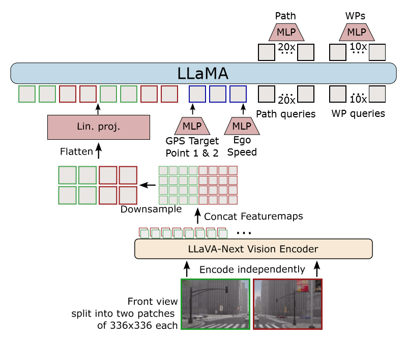
図5：SimLingo-BASE のアーキテクチャ。画像は 2 つに分割され、各分割は独立にエンコードされた後、連結、ダウンサンプリング、射影され、LLaMA アーキテクチャに基づく Transformer デコーダに入力される。出力には SimLingo と同じ出力表現を用いる。
図中ラベル：Path＝経路、WPs＝ウェイポイント、Path queries＝経路クエリ、WP queries＝ウェイポイントクエリ、Lin. proj.＝線形射影、Flatten＝平坦化、GPS Target Point 1 & 2＝GPS 目標点 1 と 2、Ego Speed＝自車速度、Downsample＝ダウンサンプリング、Concat Featuremaps＝特徴マップの連結、LLaVA-Next Vision Encoder＝LLaVA-Next 視覚エンコーダ、Encode independently＝独立にエンコード、Front view split into two patches of 336x336 each＝前方視野を 336x336 の 2 つのパッチに分割
B.3 SimLingo と SimLingo-BASE の比較
我々のベースモデル SimLingo-BASE は、運転固有の設計上の選択を研究するための軽量モデルとして設計された。言語能力を追加するにあたり、追加された要件により適合するよう、いくつかの設定も変更した。なお、CARLA Leaderboard の閉鎖と計算コストのため、新しい設定で SimLingo-BASE の実験をやり直してはいない。主張と結果は引き続き成り立つと期待できると考えている。図 5 に SimLingo-BASE のアーキテクチャを示す。SimLingo-BASE と SimLingo の正確な違いを以下に詳述する。
- エポック数：SimLingo-BASE は 30 エポック学習する。SimLingo ではエポック数を 14 に減らす。
- 画像エンコーダ：SimLingo-BASE は、LLaVA VLM でデフォルトとして用いられる CLIP-ViT を用いる。SimLingo は InternVL2-1B の元の画像エンコーダを用いる。いずれの場合も、完全なファインチューニングを行う。
- 言語モデル：SimLingo-BASE は、ゼロから学習する LLaMA アーキテクチャに基づく 50M パラメータの Transformer デコーダを用いる。SimLingo は、InternVL2-1B モデルのデフォルトの事前学習済み LLM を用い、これを LoRA でファインチューニングする。
- 損失関数：SimLingo-BASE は L2 損失を用いる。追加の Action Dreaming データを加えた後、L2 損失では学習中に不安定性が見られたため、SmoothL1 損失に変更した。
B.4 評価指標の説明
Leaderboard 2.0
Leaderboard は公式の CARLA 評価指標である Driving Score、Route Completion、Infraction Score を用いる。各指標はルートごとに独立に計算される。すべてのルートが完了した後、全ルートにわたる指標の算術平均をとることで最終的な指標が導出される。グローバルな値を用いて計算される全体のドライビングスコアが、手法を順位付けするための主要な評価指標である。
Driving Score。主要な評価基準は Driving Score であり、次のように表される。
\[ DS_i = RC_i \cdot IS_i, \]
ここで \( RC_i \) は \( i \) 番目のルートの完走率を表し、\( IS_i \) はルート中に発生した違反を考慮するペナルティ係数である。
Route Completion。この指標は、エージェントがうまく完走したルートの割合をパーセントで定量化する。
Infraction Penalty。違反によるペナルティ \( IS_i \) は、すべての違反の積として計算される。
\[ IS_i = \prod_{j=1}^{N_I} (p_j)^{\#\text{infractions}_j}, \]
ここで \( p_j \) は、以下で規定する合計 \( N_I \) 種類の違反のうち \( j \) 番目の種類の違反に対するペナルティ係数を表す。\( \#\text{infractions}_j \) はこの違反が発生した回数である。計算は基本スコア 1.0 から始まり、違反ごとに減少する。
違反は重大度によって分類され、それぞれドライビングスコアを減少させるペナルティ係数が対応付けられている。主な違反は次のとおりである。
- 歩行者との衝突：\( p_j = 0.50 \)。
- 車両との衝突：\( p_j = 0.60 \)。
- 静的物体との衝突：\( p_j = 0.65 \)。
- 赤信号無視：\( p_j = 0.70 \)。
- 一時停止標識の無視：\( p_j = 0.80 \)。
- 緊急車両に道を譲らないこと：\( p_j = 0.7 \)。
- 最低速度を維持できないこと：最大で \( p_j = 0.7 \)。
- 道路外の走行：ルート完走スコアを比例的に減少させる。
次のいずれかの事象が発生すると、ルートは直ちに停止する。
- ルートからの逸脱（ルートから 30 メートルを超えて外れる）。
- エージェントの立ち往生（180 シミュレーション秒を超えて行動がない）。
- 通信タイムアウト（60 秒を超える）。
- ルートのタイムアウト（許容されるシミュレーション時間を超える）。
Leaderboard 2.0 の評価指標に関する議論
Driving Score は、ルート全体を完走しないほうが有利になり得るような方法で計算される。これは、ルートのある区間で生じる違反がドライビングスコアを減少させる量が、ルートを続けることによる潜在的な利得を上回る場合である。この場合、さらなるペナルティを避けるために早期に停止したほうが、全体としてより高いドライビングスコアにつながる。このトレードオフは長いルートでのみ生じる。このトレードオフの数学的な記述、詳細な議論、より良い指標計算の提案については［67］を参照されたい。
Bench2Drive
Driving Score。Driving Score は Leaderboard 2.0 と同様に計算される。元の Driving Score との唯一の違いは、「最低速度を維持できないこと」のペナルティが無視される点である。走行速度を考慮するため、ベンチマークの作成者は「Efficiency（効率性）」の指標を導入した。Bench2Drive は短いルートを用いるため、上述のトレードオフはこのベンチマークでは生じない。
Success Rate。成功率は、違反なしで（最低速度ペナルティは無視して）完走したルートの割合を測定する。
Efficiency。これは、周囲のアクタの速度に対する自車の速度の比を用いる。Leaderboard 1.0 では低速に対するペナルティがなかったため、ほとんどのモデルは非常に低い速度を用いており、これにより走行や他の動的アクタへの反応がはるかに容易になっていた。この効率性の指標が高いほどモデルは速く走行しており、運転タスクはより難しくなる。
Comfortness。快適性の指標は、ジャークの大きさ、横方向と縦方向の加速度、ヨー加速度、縦方向ジャーク、ヨーレートを考慮する。ルート全体にわたる自車の測定値の平均が以下の閾値内に収まれば、成功として扱われる。
- ジャークの大きさ（Jerk Magnitude）：ジャークの絶対値の最大値は 8.37 m/s3。
- 横方向加速度（Lateral Acceleration）：横方向加速度の絶対値の最大値は 4.89 m/s2。
- 縦方向加速度（Longitudinal Acceleration）：
- 縦方向加速度の最大値は 2.40 m/s2。
- 縦方向加速度の最小値は −4.05 m/s2。
- ヨー加速度（Yaw Acceleration）：ヨー加速度の絶対値の最大値は 1.93 rad/s2。
- 縦方向ジャーク（Longitudinal Jerk）：縦方向ジャークの絶対値の最大値は 4.13 m/s3。
- ヨーレート（Yaw Rate）：ヨーレートの絶対値の最大値は 0.95 rad/s。
閾値は Bench2Drive のリポジトリから引用している。
視覚言語理解
VQA とコメンタリーのタスクについては、評価指標として SPICE［5］と DriveLM の GPT Score［53］を用いる。SPICE は画像キャプショニングに用いられる評価指標であり、CIDEr［57］や METEOR［33］のような他の自動言語評価指標よりも人間の判断との相関が高い。GPT Score は DriveLM の実装に基づき、2 つの小さな変更を加えたものである。評価セットが異なるため彼らの数値と直接比較することはできなかったので、これらの変更は導かれる結論に影響を与えないはずである。1 つ目の変更は、GPT-3.5 の代わりに GPT-4（gpt-4o-2024-08-06）を用いることである。加えて、プロンプトに「Just rate the similarity of the content not the sentence structure. If the content is completely different rate with 0.（文の構造ではなく内容の類似度だけを評価せよ。内容がまったく異なる場合は 0 と評価せよ。）」を追加する。これにより、より正確になることがわかったためである。
Action Dreaming
Action Dreaming の評価には、評価指標として成功率を用いる。各カテゴリは独自の成功の定義を持ち、以下に詳述する。
- 減速（Slow down）：予測された速度ウェイポイントの各ウェイポイントについて目標速度を計算する。これらの目標速度は将来のタイムステップにおける目標速度を表す。線形回帰を行って傾きを得る。傾きが \( -0.05 * v \) より小さいことを成功と定義する。ここで \( v \) は現在の自車速度である。
- 加速（Speed up）：減速と同じ計算を行うが、\( slope \gt 0.05 * v \) を用いる。
- 目標速度（Target Speed）：ウェイポイントの予測ホライズン内で目標速度に到達できるかどうかはわからないため、予測を目標速度と直接比較する代わりに、正解の行動と比較する。成功を定義する 2 つのルールを用いる。第 1 に、最後の 2 つのウェイポイントから推定される予測目標速度が、指示された目標速度の 20% の範囲内にある場合。第 2 に、最後の 2 つのウェイポイントから推定される予測目標速度が、正解の速度ウェイポイントの最後の 2 つのウェイポイントの速度の 20% の範囲内にある場合。後者は、車両の加速度の制限により、指示された目標速度とは異なる場合がある。
- 車線変更（Lane Change）：予測された経路ウェイポイントの最終ウェイポイントを、正解のドリーマー経路と正解のエキスパート経路のウェイポイントと比較する。予測された最終位置が、エキスパートの最終位置よりもドリーマーの最終位置に近い場合に、車線変更が成功したと定義する。
- 物体（衝突）（Objects (Collisions)）：これは、特定の物体に向かって走行する、あるいは衝突するタスクを表す。まず経路を見る。エキスパート軌道の経路と正解のドリーマー軌道が異なる場合（平均変位誤差 \( ADE \gt 1.0 \)）、予測された経路がエキスパートの経路よりも正解のドリーマー経路に近ければ（\( ADE_{pred2expert} \gt ADE_{pred2dreamer} \)）成功とみなす。ドリーマー経路がエキスパート経路とほぼ同一である場合（\( ADE \lt 1.0 \)）、指示は正しい速度予測に関するものである（例：指示が「drive towards a dynamic object（動的物体に向かって走行せよ）」であれば、経路だけでなく速度を正しく得ることが重要である）。その場合の成功は、\( ADE_{pred2dreamer} \lt 1.0 \) かつ予測された平均速度が正解のドリーマー速度の 30% 以内であることと定義される。
| 手法 | 能力（%）↑ | ||||||
|---|---|---|---|---|---|---|---|
| Merging（合流） | Overtaking（追い越し） | Emergency Brake（緊急ブレーキ） | Give Way（道を譲る） | Traffic Sign（交通標識） | Mean（平均） | ||
| w/ dist. | TCP［62］ | 16.18 | 20.00 | 20.00 | 10.00 | 6.99 | 14.63 |
| TCP-ctrl | 10.29 | 4.44 | 10.00 | 10.00 | 6.45 | 8.23 | |
| TCP-traj | 8.89 | 24.29 | 51.67 | 40.00 | 46.28 | 28.51 | |
| ThinkTwice［29］ | 27.38 | 18.42 | 35.82 | 50.00 | 54.23 | 37.17 | |
| DriveAdapter［28］ | 28.82 | 26.38 | 48.76 | 50.00 | 56.43 | 42.08 | |
| w/o dist. | AD-MLP［65］ | 0.00 | 0.00 | 0.00 | 0.00 | 4.35 | 0.87 |
| UniAD-Tiny［24］ | 8.89 | 9.33 | 20.00 | 20.00 | 15.43 | 14.73 | |
| UniAD-Base［24］ | 14.10 | 17.78 | 21.67 | 10.00 | 14.21 | 15.55 | |
| VAD［31］ | 8.11 | 24.44 | 18.64 | 20.00 | 19.15 | 18.07 | |
| TCP-traj w/o distillation | 17.14 | 6.67 | 40.00 | 50.00 | 28.72 | 28.51 | |
| SimLingo-BASE (LB2.0 model) | 60.00 | 60.00 | 78.33 | 50.00 | 77.89 | 65.25 | |
| SimLingo | 54.01±2.63 | 57.04±3.40 | 88.33±3.34 | 53.33±5.77 | 82.45±4.73 | 67.03±2.12 | |
表8：Bench2Drive のマルチアビリティの結果。我々はすべての能力において既存手法を上回り、平均で 25 パーセンテージポイント改善できる。（訳注：w/ dist.＝エキスパート特徴の蒸留あり、w/o dist.＝蒸留なし。）
| (a) 出力 | DS ↑ | Stat ↓ |
|---|---|---|
| WPs | 3.21 | 0.68 |
| +Path | 4.49 | 0.0 |
| (b) 視覚エンコーダ | DS ↑ |
|---|---|
| Clip ViT | 6.87 |
| w/o pretr. | 0.45 |
| Resnet-34 | 2.71 |
| (c) 早期停止 | DS ↑ |
|---|---|
| 1300 | 3.93 |
| 1800 | 4.49 |
| 2100 | 6.87 |
| 2400 | 6.35 |
表9：SimLingo-BASE のさまざまな部分のアブレーション。分離された出力表現の優位性と、早期停止の適切な閾値が与える大きな影響を示している。デフォルト設定のスコアは灰色で強調している。すべての数値は公式の Leaderboard 2.0 のスコアである。（訳注：WPs＝ウェイポイントのみ、+Path＝経路を追加、Stat＝静的レイアウトとの衝突、w/o pretr.＝事前学習なし。(c) の 1300〜2400 は早期停止までの走行距離（メートル）。）
C 定量的結果
C.1 CARLA Leaderboard 2.0 でのアブレーション
SimLingo-BASE に関する追加の結果を示す。
出力表現。表 9a は、異なる出力表現に対する Leaderboard 上の DS を比較している。追加の経路予測の目的は横方向制御の改善であるため、主に不適切な操舵によって引き起こされる静的レイアウトとの衝突も報告する。分離表現により、レイアウトとの衝突を 0.68 から 0 に減らすことができ、追加の経路予測の強みを示している。
視覚言語と CLIP の事前学習。視覚エンコーダの事前学習をアブレーションし、同じモデルをゼロから学習する。表 9b の「w/o pretr.」は、良好な運転性能には事前学習の段階が不可欠であることを示している（より長く学習すれば性能はさらに改善し得るが、事前学習済みモデルの性能に達する可能性は低い）。さらに、ImageNet で事前学習され広く用いられている ResNet-34 との比較を示す。性能の低下（2.71 対 6.87 DS）は、より大きな ViT とインターネット規模の画像・言語事前学習の重要性を示している。
早期停止。評価指標の節で述べたように、長いルートでの DS は最適ではなく、ルート全体を完走しないモデルを優遇する。ルートとシナリオの密度は非公開であるため、完璧なトレードオフを計算するのは自明ではない（ただし期待される DS の大まかな関数は計算でき、我々はそれを用いておおよその範囲を得た）ことから、早期停止の閾値をアブレーションする。表 9c は、与えられた走行距離（メートル）に対する Leaderboard の DS を示している。このハイパーパラメータは最終スコアに大きな影響を与える。
Leaderboard の分散。評価の分散を推定するため、ベースモデル SimLingo-BASE を早期停止の閾値 2100 と 2400 でそれぞれ 3 回ずつ Leaderboard に投稿した。2100 のモデルでは、6.9、5.5、5.3 のスコアが得られ、平均 DS は 5.9、標準偏差は 0.87 となった。閾値 2400 のベースモデルは 6.4、6.3、4.8 を得て、平均は 5.83、標準偏差は 0.90 となった。
C.2 Bench2Drive のマルチアビリティの結果
表 8 に Bench2Drive のマルチアビリティ指標を示す。本論文の知見と一貫して、SimLingo は既存研究を上回っている。特に Merging（合流）、Overtaking（追い越し）、Emergency Brake（緊急ブレーキ）、Traffic Sign（交通標識）の能力において、性能が大きく向上している。Give way（道を譲る）は依然として難しい。
| Bench2Drive | ||
|---|---|---|
| DS ↑ | SR（%）↑ | |
| w/o CoT | 84.41±1.76 | 64.84±2.42 |
| with CoT | 85.07±0.95 | 67.27±2.11 |
表10：推論モード。推論時に chain-of-thought（CoT）を用いた場合と用いない場合の SimLingo の Bench2Drive の結果。CoT を用いるとわずかな改善が見られる。
C.3 Chain-of-Thought 推論モード
表 10 で、SimLingo の Chain-of-Thought（CoT）推論モードをアブレーションする。コメンタリーのタスクを CoT として用いるとわずかな改善が見られるため、これをデフォルトのモードとして用いることにした。ただし、CoT なしでも性能はそれほど低下しないため、特に推論速度が重要な場合には、CoT なしでモデルを用いることも実行可能な選択肢である。
D 定性的結果
図 6 に、異なるナビゲーションコマンドに対するより多くの定性的結果を示す。赤い点は予測された経路ウェイポイント、緑の点は予測された速度ウェイポイントである。各行は、ナビゲーションコマンドを変更しながら閉ループ走行から取得したものである。2 行目は、モデルが異なる状況をうまく区別し、与えられたコマンドに応じて挙動を適応できることを示している。車両は右車線から出発する。「Turn left...（左折せよ…）」という指示を与えると、モデルは左車線への車線変更を開始する。この車線変更を終えた後、コマンドが依然として「Turn left...」であっても、車両はこの車線にとどまる。つまりモデルは、異なる車線の意味、対向車線に入ることは禁止されていること、そして「Turn left」が必ずしも 90 度の旋回を意味しないことを推論できるよう学習している。3 行目では、誤解を招く指示、すなわち右に向かう車線のない交差点で「Turn right（右折せよ）」をモデルに与える。3 枚目と 4 枚目の画像は、モデルがわずかに混乱しているものの、閉ループで展開すると車は依然として直進し、道路上にとどまることを示している。4 行目では、分布外のコマンドを示す。「I really like my dog（私は自分の犬が本当に好きだ）」のような意味をなさないコマンドを用いても、モデルは依然として妥当な経路を選択できる。「Why is there a tree on the right side?（なぜ右側に木があるのか？）」というコマンドを用いると、モデルは依然として左折を選ぶ。これは、モデルが left や right のような単語に単に過剰適合しているのではなく、文脈も考慮していることを示している。「Do a U-Turn（U ターンせよ）」というコマンドを用いた最後の画像は、モデルが学習中に一度も見たことのない概念には従えないことを示している。
図 7、図 8、図 9、図 10、図 11 に、異なる Dreamer モードに対する定性的結果を示す。ほとんどの場合、明らかにエキスパートの運転挙動に反する場合（例：赤信号での加速）でも、モデルは指示に正しく従う。また、モデルが指示を無視する失敗例のいくつかも赤枠で示している。
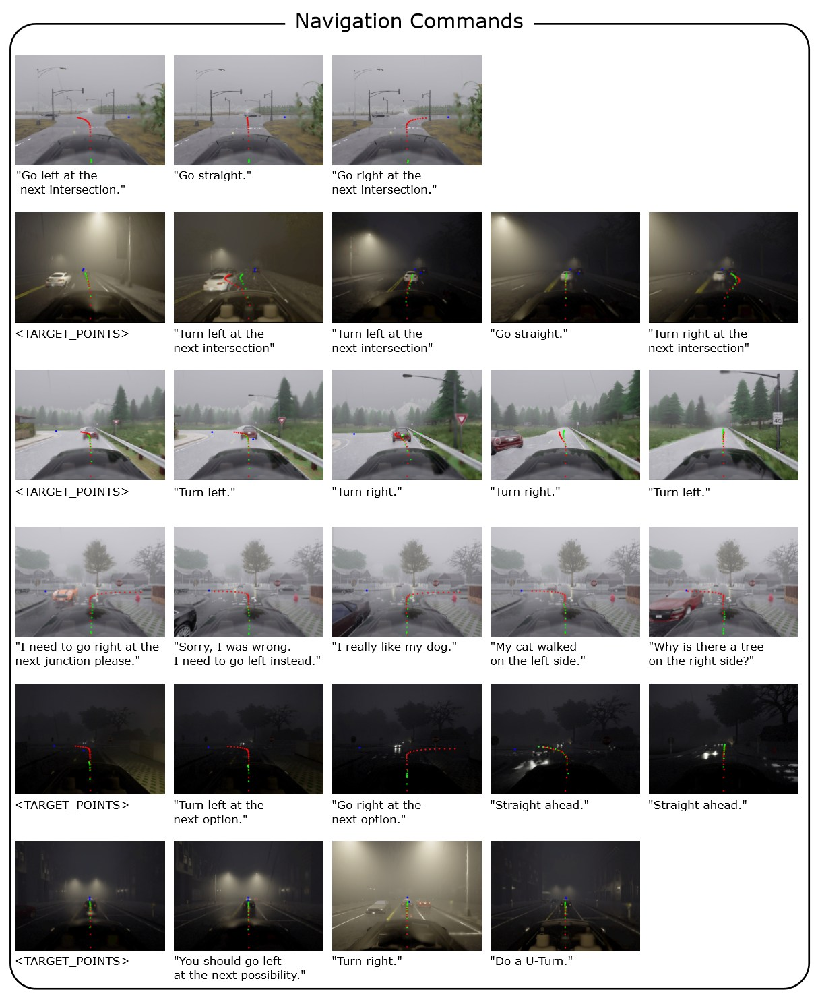
図6：ナビゲーションコマンド。分布内および分布外のさまざまなコマンドに対する閉ループの結果を示す。赤：経路ウェイポイント、緑：速度ウェイポイント。
図中ラベル：Navigation Commands＝ナビゲーションコマンド、<TARGET_POINTS>＝目標点による条件付け。（1 行目）「次の交差点で左へ。」「直進。」「次の交差点で右へ。」（2 行目）「次の交差点で左折」「次の交差点で左折」「直進。」「次の交差点で右折」（3 行目）「左折。」「右折。」「右折。」「左折。」（4 行目）「次の交差点で右に行く必要があります、お願いします。」「すみません、間違えました。代わりに左に行く必要があります。」「私は自分の犬が本当に好きだ。」「私の猫が左側を歩いた。」「なぜ右側に木があるのか？」（5 行目）「次の選択肢で左折。」「次の選択肢で右へ。」「まっすぐ前へ。」「まっすぐ前へ。」（6 行目）「次に可能なところで左へ行くべきだ。」「右折。」「U ターンせよ。」
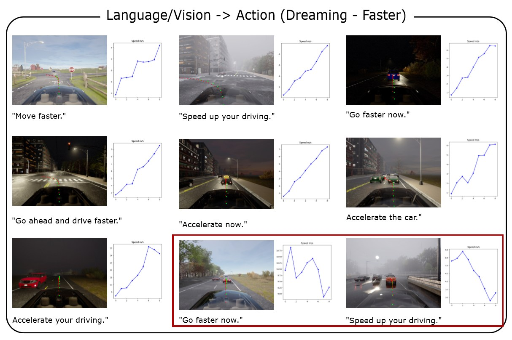
図7：Dreamer モード：加速。予測された速度曲線（速度ウェイポイントから推定）を青で示す。赤枠内は、モデルがコマンドに正しく従わない例である。赤：経路ウェイポイント、緑：速度ウェイポイント。
図中ラベル：Language/Vision -> Action (Dreaming - Faster)＝言語／視覚 → 行動（ドリーミング：加速）、Speed m/s＝速度 m/s。指示文：「もっと速く動け。」「運転のスピードを上げよ。」「今すぐもっと速く行け。」「先へ進み、もっと速く走れ。」「今すぐ加速せよ。」「車を加速せよ。」「運転を加速せよ。」（赤枠内）「今すぐもっと速く行け。」「運転のスピードを上げよ。」
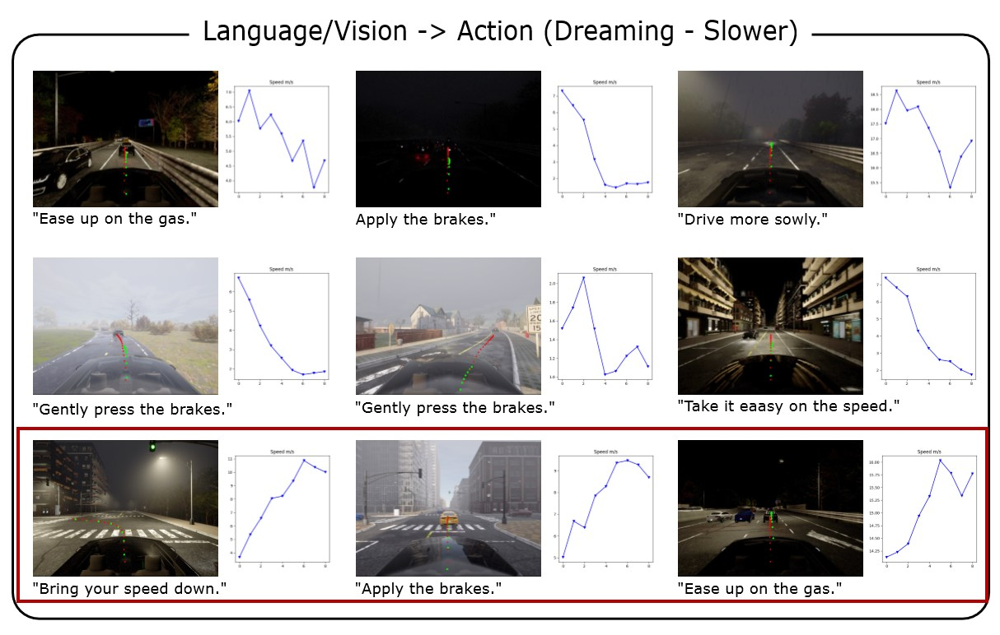
図8：Dreamer モード：減速。予測された速度曲線（速度ウェイポイントから推定）を青で示す。赤枠内は、モデルがコマンドに正しく従わない例である。赤：経路ウェイポイント、緑：速度ウェイポイント。
図中ラベル：Language/Vision -> Action (Dreaming - Slower)＝言語／視覚 → 行動（ドリーミング：減速）、Speed m/s＝速度 m/s。指示文：「アクセルを緩めよ。」「ブレーキをかけよ。」「もっとゆっくり走れ（原文 "sowly" は "slowly" の誤記）。」「ブレーキを優しく踏め。」「ブレーキを優しく踏め。」「速度は気楽にいけ（原文 "eaasy" は "easy" の誤記）。」（赤枠内）「速度を落とせ。」「ブレーキをかけよ。」「アクセルを緩めよ。」
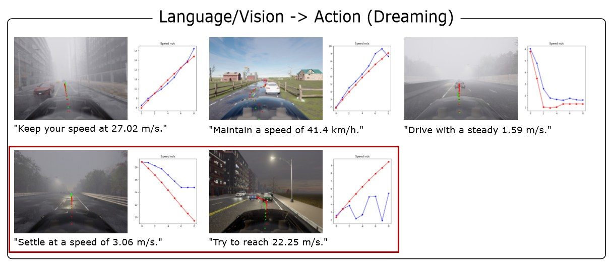
図9：Dreamer モード：目標速度。赤の折れ線で正解の速度曲線を、青で予測された速度曲線（速度ウェイポイントから推定）を示す。赤枠内は、モデルがコマンドに正しく従わない例である。赤：経路ウェイポイント、緑：速度ウェイポイント。
図中ラベル：Language/Vision -> Action (Dreaming)＝言語／視覚 → 行動（ドリーミング）、Speed m/s＝速度 m/s。指示文：「速度を 27.02 m/s に保て。」「41.4 km/h の速度を維持せよ。」「1.59 m/s で一定に走行せよ。」（赤枠内）「3.06 m/s の速度に落ち着け。」「22.25 m/s に到達するよう試みよ。」
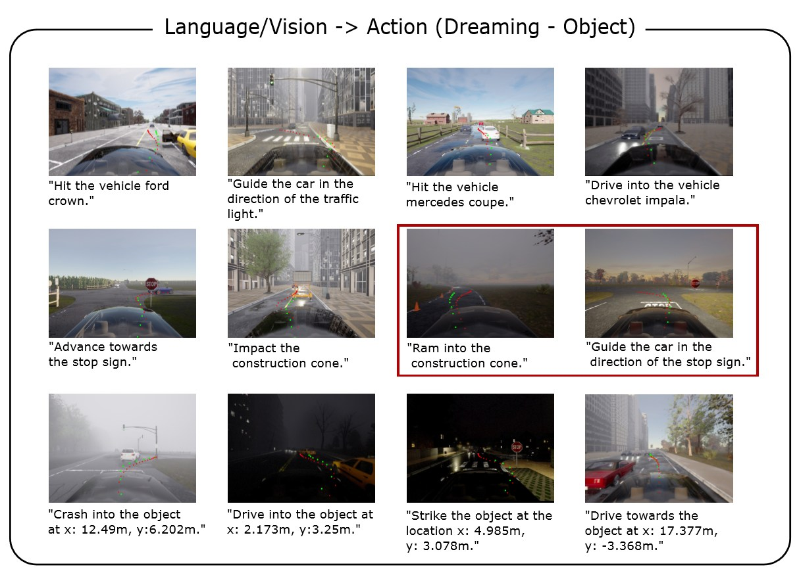
図10：Dreamer モード：物体（衝突）。赤枠内は、モデルがドリーマーモードのコマンドに正しく従わない例である。赤：経路ウェイポイント、緑：速度ウェイポイント。
図中ラベル：Language/Vision -> Action (Dreaming - Object)＝言語／視覚 → 行動（ドリーミング：物体）。指示文：（1 行目）「車両 ford crown にぶつかれ。」「信号機の方向へ車を導け。」「車両 mercedes coupe にぶつかれ。」「車両 chevrolet impala に突っ込め。」（2 行目）「一時停止標識に向かって進め。」「工事用コーンに衝突せよ。」（赤枠内）「工事用コーンに激突せよ。」「一時停止標識の方向へ車を導け。」（3 行目）「x: 12.49m, y:6.202m の物体に衝突せよ。」「x: 2.173m, y:3.25m の物体に突っ込め。」「位置 x: 4.985m, y: 3.078m の物体に衝突せよ。」「x: 17.377m, y: -3.368m の物体に向かって走行せよ。」
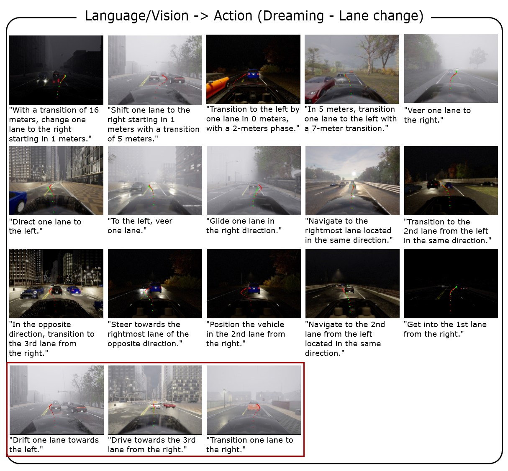
図11：Dreamer モード：車線変更。赤枠内は、モデルがドリーマーモードのコマンドに正しく従わない例である。赤：経路ウェイポイント、緑：速度ウェイポイント。
図中ラベル：Language/Vision -> Action (Dreaming - Lane change)＝言語／視覚 → 行動（ドリーミング：車線変更）。指示文：（1 行目）「16 メートルの遷移で、1 メートル先から 1 車線右へ変更せよ。」「1 メートル先から、5 メートルの遷移で 1 車線右へ移れ。」「0 メートル先で、2 メートルの区間で 1 車線左へ移れ。」「5 メートル先で、7 メートルの遷移で 1 車線左へ移れ。」「1 車線右へ寄れ。」（2 行目）「1 車線左へ向かえ。」「左へ、1 車線寄れ。」「右方向へ 1 車線滑るように移れ。」「同方向の最も右の車線へ進め。」「同方向の左から 2 番目の車線へ移れ。」（3 行目）「逆方向の、右から 3 番目の車線へ移れ。」「逆方向の最も右の車線へ向けて操舵せよ。」「右から 2 番目の車線に車両を位置させよ。」「同方向の左から 2 番目の車線へ進め。」「右から 1 番目の車線に入れ。」（赤枠内）「左へ 1 車線流れるように移れ。」「右から 3 番目の車線に向かって走行せよ。」「1 車線右へ移れ。」